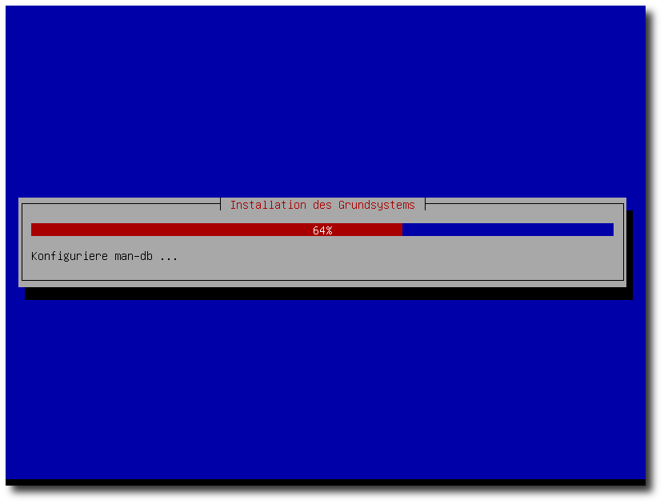
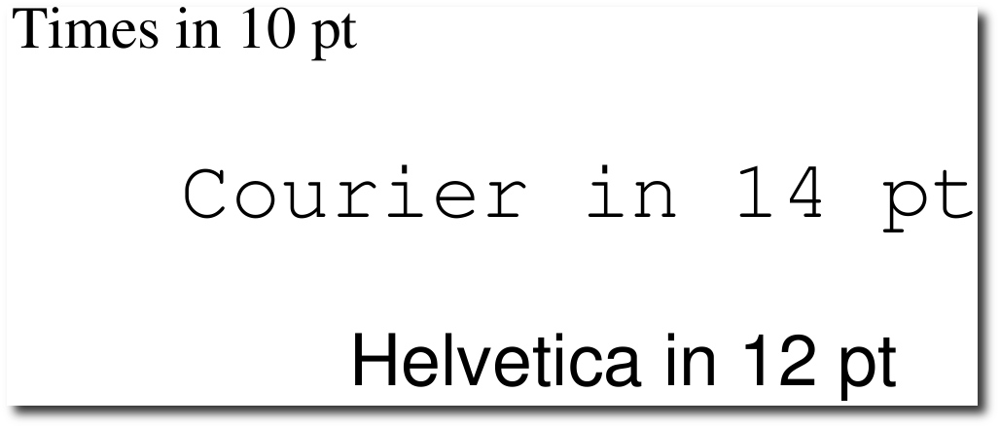

Zur Version ohne Bilder
freiesMagazin April 2010 (ISSN 1867-7991)
Topthemen dieser Ausgabe
LinuxAdvanced-USB-Edition - Mehr als eine „digitale Schultasche“
Linux für die Schule kommt langsam in Fahrt. Während in Deutschland Linux-Lösungen für den Schulsektor wie Skole-Linux (Debian-Edu), Seminarix oder der Arktur-Schulserver recht bekannt sind, stehen im Nachbarland Österreich andere Linux-Projekte für Schulen im Fokus der Aufmerksamkeit. Der Artikel soll den Lesern einen weiteren, kleinen, aber pfiffigen Pinguin vorstellen: das freie „LinuxAdvanced“ aus Krems in Niederösterreich. (
weiterlesen)
Eine Einführung in Tcl
Es gibt zahlreiche Skriptsprachen auf dem „Markt“: Bash, Perl, Python, PHP und viele mehr. Etwas unbekannter, aber in manchen Fällen ganz nützlich ist Tcl (Tool Command Language) von John K. Ousterhout. Dieser Artikel soll anhand eines kleinen Beispiels in die Sprache einführen und deren Besonderheiten aufzeigen. (
weiterlesen)
Ubuntu-Live-System von USB-Sticks booten
Es gibt immer mehr Netbooks ohne CD/DVD-Laufwerk, dafür kosten USB-Sticks so gut wie nichts mehr. Kein Wunder, dass es immer interessanter wird, die Images von USB zu starten, statt sich externe Laufwerke zuzulegen. Als Vorlagen für diese USB-Images dienen meist sogenannte Desktop-CDs bzw. Live-CDs. (
weiterlesen)
Zum Index
Linux allgemein
LinuxAdvanced-USB-Edition
Debian Testing „squeeze“
Der März im Kernelrückblick
Anleitungen
Eine Einführung in Tcl
Ubuntu-Live-System von USB-Sticks booten
Software
PDF-Dokumente mit ReportLab
Community
Rezension: Reguläre Ausdrücke Kochbuch
Rezension: Gentoo Linux
Magazin
Editorial
Leserbriefe
Veranstaltungen
Konventionen
Impressum
Zum Index
April, April
Zurück zu den Wurzeln
Ja, wir geben zu, dass die gestrige Ausgabe von
freiesMagazin nicht ganz den
Geschmack aller Leser getroffen hat. Ehrlich gesagt hoffen wir das
sogar, denn eine Umstellung auf dieses „tolle“ Format kommt für uns
nicht ernsthaft in Frage. Ein bisschen wollten wir mit dieser
Aprilscherzausgabe der guten, alten Zeit frönen, als Bildschirme nur
vier Farben kannten und Buchstaben die Krönung des Darstellbaren waren.
Und auch die Idee mit der Veröffentlichung auf identi.ca ist nur ein Hirngespinst, ebenso wie die Redaktionssitzungen via Pulse.
Wir planen nicht,
unsere Aktivitäten auf solchen Social-Network-Plattformen auszubauen,
freuen uns aber natürlich
über jede Erwähnung, die den Bekanntheitsgrad von
freiesMagazin
steigert. Eine gemeinschaftliche Produktion dagegen, an der jeder
mitmachen kann (wie in einem Wiki), würde nicht mit
den starren Regeln der Magazinveröffentlichungen zusammenpassen. Sorry,
falls wir hier falsche Erwartungen geschürt haben sollten.
Kernelrückblick erklärt
Eine kleine Neuerung gibt es beim Kernelrückblick. Jeden Monat wird Autor
Mathias Menzer einen Begriff, der nicht unbedingt allgemein bekannt ist,
erklären. Sollten Wünsche oder Begriffsfragen auftauchen, kann man einfach
eine E-Mail an die Redaktion senden.
Neue Autoren sucht das Land
Wie im letzten Editorial angekündigt (siehe
freiesMagazin 03/2010
[1]), ist die
aktuelle Aprilausgabe von
freiesMagazin wegen der kommenden Osterfeiertage
etwas eher erschienen, was dem Umfang der Ausgabe natürlich keinen Abbruch tut.
Dennoch haben wir derzeit nicht mehr all zu viele
Artikel auf Halde, mit denen wir das Magazin füllen könnten.
Daher folgt an dieser Stelle wieder einmal der Aufruf nach neuen
Autoren. Wer eine Idee hat oder ein ganz tolles Programm kennt und
unbedingt einmal darüber etwas schreiben will, kann sich einfach
über

an die Redaktion wenden. Wir geben hilfreiche Tipps und
Verbesserungsvorschläge bei der Erstellung der Artikel für
freiesMagazin.
Wer noch keine Idee hat, kann sich auf der Artikelwunschliste
[2]
informieren, welche Themen die Leser interessant finden.
Wir wünschen Ihnen nun viel Spaß mit der neuen, „altbewährten“ Ausgabe.
Ihre
freiesMagazin-Redaktion
Links
- http://www.freiesmagazin.de/freiesMagazin-2010-03
- http://www.freiesmagazin.de/artikelwuensche
Das Editorial kommentieren
Zum Index
von Carsten Rohmann
Linux für die Schule kommt langsam in Fahrt, wie ein Blick auf die
Webseite der deutschen Linux-Schulserver-Projekte zeigt [1].
Während in Deutschland Linux-Lösungen für den Schulsektor wie
Skole-Linux (Debian-Edu) [2],
Seminarix [3] oder der
Arktur-Schulserver [4] recht bekannt sind, stehen
im Nachbarland Österreich andere Linux-Projekte für Schulen im
Fokus der Aufmerksamkeit, beispielsweise der Desktop4Education bzw.
der Server4Education auf der Basis von openSUSE [5].
Der vorliegende Artikel möchte den Lesern und Anwendern einen
weiteren, kleinen, aber pfiffigen Pinguin vorstellen: das freie
„LinuxAdvanced“ aus Krems in Niederösterreich [6].
Das bedeutet kurz gesagt: eine Distribution auf Basis von Debian
GNU/Linux stable mit Anleihen von Dreamlinux, Optimierung für
Netbooks und Ausrichtung auf den Betrieb im „Live-Modus“.
Als Quelle für diesen Artikel diente primär ein E-Mail-Interview mit
den Entwicklern aus dem Jahr 2009/2010. Ergänzend wurden
Informationen aus zwei, bereits online veröffentlichten Publikationen
über LinuxAdvanced herangezogen:
Einmal aus dem Beitrag „Linux auf
dem USB-Stick für den Schuleinsatz“ von Barbara Wimmer bei
„Futurezone ORF.at“ vom 13.05.2009
[7]
und aus dem Artikel „Fortgeschritten. Schul-Linux von Praktikern für
Praktiker.“ von Erik Bärwaldt aus der LinuxUser 6/2009, veröffentlicht
bei „Linux Community“ am 20.05.2009
[8].
Know-how macht Schule
Eine „digitale Schultasche“ wird erwachsen
In Abgrenzung zum klassischen Konzept einer „digitalen Schultasche“,
die im Schulbildungsbereich meist einen USB-Stick mit portabler
Software für Windows bezeichnet, die dann zum Funktionieren einen
externen Windows-Rechner braucht, ist LinuxAdvanced ein komplettes
Betriebssystem auf Linux-Basis. Zum Einstieg
in die Thematik der
„digitalen Schultaschen“ empfehlen sich unter anderem die Webseiten
des Medienzentrums Kassel
[9]
und die Webseiten des Informatikservers Graz
[10].
Sollte man einen USB-Stick mit portabler Software als eine
vollständige digitale Schultasche bezeichnen, wenn dieser Stick auf
ein externes Betriebssystem für die Nutzung angewiesen bleibt?
LinuxAdvanced stellt aus diesem Blickwinkel gesehen eine
„vollständige digitale Schultasche“ dar. Als Voraussetzung braucht
es einen geeigneten Rechner (z. B. Desktop-PC, Notebook oder
Netbook)
bestückt mit Hardware, die von Linux unterstützt wird. Dieser
Rechner kann „leer“ sein oder gar andere Betriebssysteme
beherbergen. LinuxAdvanced greift im Live-Betrieb nicht auf die
Festplatte (und ggf. vorhandene Programme) des Rechners zu,
sondern wird als ganzes System direkt vom USB-Stick gestartet und
in den Arbeitsspeicher des Rechners geladen. Die Technik, ein
Betriebssystem (ohne Installation auf einer Festplatte) nur von
einem Startmedium zu betreiben stammt laut der Online-Enzyklopädie
„Wikipedia“ bereits aus den frühen Tagen der Entwicklung von
Betriebssystemen
[11]. In
Kombination mit den kleinen USB-Sticks bietet diese „Live-Technik“
inzwischen einige interessante Optionen zum Betrieb von
Desktop-Rechnern oder gar Servern.
Der Schwerpunkt des folgenden Beitrags liegt auf der
Live-USB-Variante LinuxAdvanced 9.2 für Desktops. Eine
Server-Variante gibt es ebenfalls, diese kann jedoch nur kurz
beschrieben werden, weil sonst der Rahmen dieses Artikels gesprengt
werden würde.
Das Projekt
Entwickelt wird LinuxAdvanced seit Anfang 2007. Das freie
Schulprojekt wird kostenlos zur Verfügung gestellt und ist für den
Einsatz an Schulen im deutschen Sprachraum optimiert. Darüber
hinaus zielt die Distribution im Gegensatz zu ähnlichen
Linux-Lösungen aus dem Bildungsbereich auf einen universellen
Einsatz ab und präsentiert sich als brauchbare
„Allround-Distribution“. Die Software-Auswahl soll die häufigsten
Alltagsanforderungen eines normalen Nutzers abdecken und wurde mit
der Zielsetzung einer maximalen Übersichtlichkeit zusammengestellt.
So steht für jeden Anwendungsfall in der Regel nur ein Programm zur
Verfügung.
Das macht LinuxAdvanced nicht nur für Schulen, sondern auch für
kleinere Netzwerk-Szenarien und Heimanwender interessant. Ein
vorkonfiguriertes Debian stable, auf Ressourcenschonung ausgelegt,
sowohl für die Festplatteninstallation als auch für den Live-Betrieb geeignet und
obendrein für Netbooks optimiert - wer kann schon so einer Versuchung
widerstehen? Zumal weitere benötigte Programme, wie von Debian
gewohnt, per APT, aptitude oder Synaptic nachinstalliert werden
können.
Den Entwicklern von LinuxAdvanced ist es wichtig, dass die Software
von den Schülern auch zu Hause problemlos genutzt
werden kann. Außerdem sehen es die Entwickler gerne, wenn eine
gewisse Breitenwirkung und Akzeptanz ihrer Distribution auch
außerhalb des Schulbereichs erreicht wird.
Die Entwickler
LinuxAdvanced ist ein Gemeinschaftswerk von engagierten Lehrern des
Bundesgymnasiums „Rechte Kremszeile“ (Mag. Dr. Klaus Misof/Projekt-Koordination,
MMag. Rene Schwarzinger/Öffentlichkeitsarbeit) und des Bundesrealgymnasiums
in Zwettl (Mag. Ewald Zimmermann/Server-Edition). (Anmerkung: „Mag.“
steht für Magister und „MMag.“ steht für Magister in zwei
Studiengängen. Inzwischen wurde dieser akademische Abschluss auch in
Österreich ersetzt durch den „Master of Science“ (MSc)). Als
außerschulischer Projektmitarbeiter fungiert Gerhard Öttel, der
sich um die Infrastruktur im Hintergrund (Newsletter, Forum und
Bugtracking-System) kümmert; den Server-Speicherplatz für den
Online-Auftritt von LinuxAdvanced stellt Markus Gonaus von der
Linux-User-Group/Freie-Software-Gruppe Krems zur Verfügung.
Viele Systemverwaltungsprogramme haben die Entwickler aus
Alltagsfragestellungen entwickelt und selbst geschrieben. Alles in
allem macht das Projekt den Eindruck, dass an der Praxis
orientierte Entwickler am Werk sind und eine flexible, auf die
Erfordernisse des Schulalltags ausgerichtete Linux-Distribution
zusammengestellt haben. Wer sich von einem Teil des Teams ein Bild
machen möchte, der kann sich ein wenig im Foto-Album umsehen, das
über die Projektseite erreichbar ist
[12]
Eine Idee - diverse Kreationen
LinuxAdvanced 9.2 basiert auf dem stabilen Debian GNU/Linux 5.0
(Lenny) und hat eine ganze Menge zu bieten: Es gibt eine
Desktop- und eine Server-Variante. Die Desktop-Variante
gliedert sich auf in eine „kleine“ CD-Edition, eine „große“
DVD-Edition und in eine USB-Edition (die vom Leistungsumfang her
mit der DVD-Variante identisch ist). Alle Desktop-Editionen können
im Live-Modus betrieben oder wahlweise auf der Festplatte
installiert werden. Als grafische Arbeitsumgebung dient das
übersichtliche und ressourcenschonende Xfce.
Die LinuxAdvanced-Editionen
Die CD-Edition ist für ältere Rechner vorgesehen, die über kein
DVD-Laufwerk verfügen und die nicht von USB-Medien gestartet werden
können. Sie enthält eine geringere Software-Auswahl als die
DVD-Edition. Die damit bereitgestellten Programme genügen aber für
die üblicherweise zu erledigenden Aufgaben. Eine genaue
Beschreibung der CD-Variante bietet die Projektseite unter der
Rubrik „
Live-CD“
[13]. Die
CD-Version befindet sich auf dem Stand LinuxAdvanced
9.1, wurde also bisher nicht aktualisiert.
Die DVD-Edition erweitert die Software-Auswahl der CD-Edition um
viele zusätzliche Sprachunterstützungen und Programme. Eine
detaillierte Beschreibung der DVD-Variante von LinuxAdvanced 9.2
findet sich auf der Homepage des Projektes unter der Rubrik
„
Live-DVD“
[14].
Die USB-Edition enthält die gleiche Software wie die DVD-Edition.
Auf einem USB-Stick können eigene Daten und Einstellungen dauerhaft
gespeichert werden. Es ist möglich, Programme nachträglich zu
installieren und diese (und sonstige) Änderungen am System mit der
Snapshot-Funktion permanent zu machen. Die USB-Version wurde zudem
so konzipiert, dass ein Datenaustausch zwischen Linux, Mac und
Windows über eine separate Daten-Partition problemlos möglich ist.
Eine genaue Beschreibung der USB-Variante LinuxAdvanced 9.2 wird
auf der Homepage des Projektes unter der Rubrik „
Live-USB“ zur
Verfügung gestellt
[15].
Die Server-Edition wird vorerst nur als Installationsvariante in
der Version 9.1 zur Verfügung gestellt. In Zukunft wird auch eine
Server-Live-Edition folgen. Die Server-Edition ist auf eine
Linux-Client-Umgebung optimiert, speziell auf schulische
Anforderungen abgestimmt und nur für kleine Netzwerke ausgelegt.
Eine Besonderheit stellt die zentrale und einfache Verwaltung der
Clients durch den Netzwerkadministrator dar, wie auf der
Projektseite zu erfahren ist
[16].
Reichlich Programme
Die Distribution lässt in ihrer Software-Auswahl einen
unverkrampften Pragmatismus erkennen: Alles, was für ihren
Verwendungszweck bewährt und hilfreich ist, wurde zu einem
sinnvollen Ganzen zusammengefügt. So finden Anwender beispielsweise
aus der Welt von GNOME, KDE und Xfce eine bunte Mischung von
Programmen, mit denen sie effizient arbeiten können.
Für den Alltagsgebrauch bietet das Sortiment z. B. den Webbrowser
Iceweasel (die Debian-Variante des Mozilla Firefox), das
E-Mail-Programm Icedove (die Debian-Variante von Thunderbird), das
umfangreiche Bürosoftwarepaket OpenOffice.org in der Version 3.1,
das Brennprogramm k3b, den Videoplayer Totem-Xine, den Audio-Editor
Audacity und das Bildbearbeitungsprogramm GIMP.
Schüler sollten einen Blick in die Rubrik „
Education“ werfen. Neben
Lernprogrammen für Mathematik wie GeoGebra, KBruch und wxMaxima werden dort Chemie-Programme, Stellarium, der
Latein-Vokabeltrainer Klatin und das Zehnfinger-Schreiblernprogramm
KTouch angeboten.
Auch Lehrer kommen hier auf ihre Kosten. Diese dürften Gefallen an
JClic finden, einem integrierten Lern- und Autorensystem, das kein
programmiertechnisches Wissen voraussetzt. JClic ermöglicht es, mit
wenig Aufwand multimediale Lehrinhalte für den Unterricht zu
erstellen
[17].
Auch an Virtualisierung wurde gedacht, LinuxAdvanced 9.2 kommt zu
diesem Zweck mit dem bekannten Programm VirtualBox
Open-Source-Edition (OSE) in der Version 1.6.6, das eine
komfortable Einrichtung virtueller Maschinen erlaubt. So können,
entsprechend leistungsfähige Hardware vorausgesetzt, auf
LinuxAdvanced als Wirt-Betriebssystem gleichzeitig mehrere
Gast-Betriebssysteme laufen. Zudem bietet LinuxAdvanced als weitere
Option für eine Windows-Virtualisierung die von den Entwicklern
bereits vorkonfigurierte Laufzeitumgebung Wine.
Eingebaute Bremsen
LinuxAdvanced kann standardmäßig nur die Linux-Dateisysteme ext2 und
ext3 und die Windows-Dateisysteme vfat und ntfs einbinden (mounten).
Ebenso fällt auf, dass von einem laufenden USB-Stick aus
kein bequemer Zugriff auf die Festplatte eines Linux- oder
Windows-Rechners ermöglicht wird. Da muss der Anwender schon die
Kommandozeile bemühen; der Zugang auf vorhandene Partitionen soll nicht automatisch
erfolgen.
Als Grund für diese Restriktionen geben die Entwickler
an, dass zu viele einbindbare Dateisysteme ein Sicherheitsrisiko
beim Umgang von Schülern mit dem System darstellen können. Die
nächste Version von LinuxAdvanced soll jedoch wieder etwas
flexibler werden und den Zugriff auf deutlich mehr Dateisysteme
erlauben.
Schulische Zielgruppen
Schultypen
Die primäre Zielgruppe von LinuxAdvanced sind zur Zeit die Allgemeinbildenden
Höheren Schulen (AHS) sowie die Hauptschulen
(HS).
Grundsätzlich kann der LinuxAdvanced-USB-Stick auch in der
Volksschule (VS) sowie in den Berufsbildenden Höheren Schulen (BHS)
verwendet werden. Bei den BHS sind größere Schwierigkeiten bei der
Umstellung auf Linux zu erwarten, bedingt durch den Einsatz von
proprietären, auf Windows angepassten Spezialprogrammen.
|
Kleiner Exkurs über das Schulsystem in Österreich:
Die grundlegenden bildungspolitischen Vorgaben, d. h. Schulorganisation und Lehrpläne, sind in Österreich
Aufgaben des Bundes. Die
Gymnasien und Höheren Schulen, wie BHS, sind Bundessache. Es gibt
grundsätzlich drei verschiedene Typen von Gymnasien (AHS): das
wirtschaftskundliche Realgymnasium, das Realgymnasium und das
Gymnasium. Das Bundesgymnasium Rechte Kremszeile ist ein
wirtschaftskundliches Realgymnasium mit Schwerpunkt Informatik. Der
Pflichtschulbereich (in den neun österreichischen Bundesländern)
unterliegt den Landesschulräten bzw. Bezirksschulräten. Für die
Hauptschulen und Volksschulen sind finanziell die Gemeinden
verantwortlich (Ausstattung, Gebäudeverwaltung). Die Schüler kommen
im Alter von durchschnittlich zehn Jahren auf das Gymnasium und
verlassen sie mit der Matura (Abitur) im Alter von 18 oder 19
Jahren.
|
Altersgruppen
Nach Auskunft der Entwickler wurde die Lernsoftware von
LinuxAdvanced primär für die Altersstufe von zehn bis 19 Jahren
zusammengestellt.
Welche Schulfächer werden einbezogen?
Grundsätzlich kommt LinuxAdvanced für alle Schulfächer zum Einsatz.
Nach Angaben der Lehrer ist die Häufigkeit der Nutzung von
LinuxAdvanced in einigen Fächern wie Informatik höher als
in anderen. LinuxAdvanced ist in das Gesamtunterrichtskonzept
integriert, die Schüler können per LinuxAdvanced auf die
schulinterne E-Lernplattformen „Claroline“ zugreifen. Informationen
dazu finden sich auf der Webseite des BG Rechte
Kremszeile
[18].
Schülerbeteiligung
In die technische Entwicklung selbst sind zur
Zeit keine Schüer
eingebunden. Jedoch soll das
Hintergrundbild für LinuxAdvanced 2011 im
Schuljahr 2009/10 durch einen Kreativ-Wettbewerb im Bundesland
Niederösterreich ermittelt werden. Natürlich fließen die
Rückmeldungen von Schülern in die Entwicklung ein. Wenn gewisse
Routinen für Schüler zu kompliziert sind, versuchen die Entwickler
diese Rückmeldung in den nächsten Versionen zu verwerten.
Aufbruch in die Zukunft
Ab jetzt nur noch „Live“
Der Schwerpunkt der Projekt-Entwicklung liegt auf der
Live-USB-Edition und zielt auf eine Abkehr von klassischen
Client-Server Strukturen. Hier offenbart das englische Wort
„Advanced“ im Namen eine visionäre Dimension: Sowohl alle Rechner
der Schüler und Lehrer als auch der Server sollen zukünftig völlig
im Live-Betrieb laufen.
Am Bundesgymnasium Rechte Kremszeile wurden schon im Herbst 2009
eigene Netbook-Klassen eingerichtet, die alle mit LinuxAdvanced 9.2
auf dem USB-Stick ausgestattet sind. 2010 sollen auch alle EDV-Säle
auf Live-Betrieb umgestellt werden. Der Vorteil wird in einem
geringeren Wartungsaufwand bei gleichzeitig erhöhter Flexibilität
gesehen.
Der USB-Version auf den Stick geschaut
Größenverhältnisse
Das installierte Linux-Betriebssystem beansprucht ungefähr 1,4 GB
Speicherplatz (als DVD- und USB-Variante) und passt damit
(theoretisch) auf einen 2-GB-Stick. Allerdings hat man in diesem
Falle kaum noch Platz für Daten oder nachinstallierte Anwendungen.
Denn auf dem USB-Stick zeigen sich nach der Installation drei
Partitionen: eine Systempartition (in der nachinstallierte
Programme landen), eine Anwenderpartition mit einem
Homeverzeichnis für eigene Dateien und eine zusätzliche
Datenaustauschpartition im Windows-Format (vfat). Diese fällt bei
einem 2-GB-Stick erfahrungsgemäß so klein aus, dass man lieber
gleich zu einen 4-GB- oder 8-GB-Stick greifen sollte. So hat man
dann mehr Freude an seinem USB-Linux. Allerdings wächst mit der
Größe des USB-Sticks nur der Umfang der Datenaustauschpartition,
der Umfang der Systempartition und des Homeverzeichnisses bleibt
stets gleich. Die Daten auf der Austauschpartition können neben
Windows natürlich auch unter Mac genutzt werden.
Zur Installation
Auf der Projektseite werden unter der Rubrik „
Live-USB“ ein 4-GB-
und ein 8-GB-Image zum Download angeboten. Sehr praktisch: Dort
findet sich auch gleich eine kurze Installationsanleitung mit
wertvollen Hinweisen
[15]. Das
Installationsprogramm kann USB-Sticks bis 32 GB ansprechen. Falls
der Stick, den man bespielen möchte, nicht exakt 4, 8, 16 oder 32
GB groß ist - was bei den meisten Produkten der Fall sein dürfte -
sollte man zum Gelingen der Installation lieber auf die Live-CD-
oder Live-DVD zurückgreifen. Die dort angebotene
Installationsroutine kommt mit den realen Größen der USB-Sticks
bestens zurecht. Das dafür vorgesehene Installationsprogramm macht
zwar einen spartanischen Eindruck (es läuft skriptgesteuert im
Terminal), funktioniert aber tadellos. Im Live-Betrieb wird ein
Installationsbutton auf dem Desktop gezeigt, über den die
Installation angestoßen werden kann. Die Live-DVD entspricht vom
installierten Software-Umfang der Live-USB-Version.
Die Lehrer beteiligen die Schüler bereits frühzeitig an den ersten
Schritten in der Handhabung von LinuxAdvanced und lassen sie
beispielsweise ihre USB-Sticks im Informatiksaal der Schule
eigenständig einrichten. Nur etwas mehr als fünf Minuten dauert der
dafür notwendige Kopiervorgang. Danach können die Schüler das
fertige System in den Unterricht und später nach Hause mitnehmen.
Wer eine ausführliche Installationsanleitung für die
Festplatteninstallation oder die USB-Installationsvariante braucht,
wird auf der Projektseite unter der Rubrik „Dokumentation“ fündig
(der der mit einem Plus gekennzeichnete Button). Die Dokumente
sind informativ, sehr klar und verständlich gestaltet und mit
reichlich Abbildungen versehen. Sie werden im PDF-Format zur
Verfügung gestellt
[19].
Inzwischen steht auch eine Anleitung für ein grafisches Werkzeug zur
Erstellung von LinuxAdvanced-USB-Sticks unter Windows-Betriebssystemen im
LinuxAdvanced-Wiki bereit
[20].
Stick gegen Cash
„Kauf Dir einen“ - wer es sich einfacher machen will und bereit ist
etwas Geld ausgeben: Ein vorkonfektionierter und geprüfter 4
GB-USB-Stick kann bei den Entwicklern für 20 € erworben werden. Die
USB-Stick Variante enthält die gleichen Programme wie die DVD. Bei
Interesse wendet
man sich an die „Misof & Schwarzinger OpenIT OG“,
die über die bereits erwähnte Projektwebseite zu erreichen
ist
[15].
Der Systemstart
Das BIOS muss mitspielen
Im BIOS eines modernen Rechners kann die Startreihenfolge von
Datenträgern eingestellt werden. Das Projekt gibt Anwendern dazu
auf seiner Webseite ein ausführliches Dokument zum Herunterladen an
die Hand
[21].
Man kann festlegen, welche Medien beim Start zuerst abgefragt werden
sollen. Daher kann man auch einstellen, dass zuerst vom eingesteckten
USB-Stick gebootet wird. Danach erst werden die anderen Datenträger
(wie CD-Rom oder Festplatte) abgefragt. Zieht man den USB-Stick vor
dem Systemstart wieder ab, dann bootet der Rechner wie
gewohnt z. B. von der Festplatte. So kann man sehr einfach den
LinuxAdvanced-Stick auch an einem Rechner mit Windows-Betriebssystem
benutzen. Voraussetzung ist nur, dass sich das BIOS des jeweiligen
Rechners entsprechend einstellen lässt und die Hardware des
Rechners vom USB-Live-Linuxsystem erkannt und unterstützt wird.
Welcher Kernel soll's denn sein?
LinuxAdvanced bietet beim Start der Live-Medien (und auch bei einer
Festplatteninstallation) im Bootmenü erfreulich viele Optionen:
Über „
Nimm zwei“ werden unter anderem zwei unterschiedliche
Kernelversionen angeboten. Die Bootoption „
LA (Standard)“, eine für
686er-Prozessoren optimierte Version, empfiehlt sich für moderne
Rechner mit CPUs ab Pentium III. Alternativ besteht mit „
LA-486
(alte PCs)“ die Wahl eines Kernels für ältere
Pentium-I/II-Prozessoren.
LinuxAdvanced Auswahlmenü.
Ist die Auswahl getroffen und der Befehl zum Systemstart
abgeschickt, präsentiert sich der Boot-Bildschirm mit einem
Hintergrundbild und einem gelben Balken als Fortschrittsanzeige.
LinuxAdvanced überrascht mit einer recht guten Erkennung der
Hardware bei mobilen Geräten wie Netbooks und Laptops. Der
Systemstart dauerte bei der USB-Version (wegen der Einbindung
nachinstallierter Programme) auf einem Testlaptop etwa zehn
Sekunden länger als bei der Festplatteninstallation, ein
ordentlicher und akzeptabler Wert.
Der LinuxAdvanced-Bootsplash mit Fortschrittsanzeige.
Der Live-Betrieb
Wenn das USB-Live-System gestartet und der Xfce-Desktop vollständig
geladen wurde, kann mit einer geringfügigen Verzögerung nahezu so
schnell wie mit der Festplatteninstallation gearbeitet werden. Die
Arbeitsumgebung bootet direkt in ein fest vorgegebenes
Anwenderkonto namens
user. Ein weiteres, persönliches Nutzerkonto
kann derzeit weder bei der Installation der Live-USB-Version, noch
später im Live-Betrieb angelegt werden. Die
Festplatteninstallation lässt das aber selbstverständlich zu.
Dass man mit der Live-USB-Variante unterwegs ist, verraten im
Vergleich zur Festplatteninstallation vier Buttons auf der
Desktop-Oberfläche: „
LA-92“ (für die Systempartition), „
home-rw“für die Partition mit dem beschreibbaren Homeverzeichnis,
„
DATEN“ (für die beschreibbare Austauschpartition im Dateiformat
vfat) und der Button für die Installation.
Bei der geladenen Arbeitsumgebung fällt sogleich eine Dockbar am
unteren Rand ins Auge: LinuxAdvanced hat die Wbar integriert, eine
einfach konfigurierbare Schnellstartleiste mit geringem
Ressourcenverbrauch. Weitere Informationen zur Wbar finden sich auf der
Projektseite bei Freshmeat
[22].
Der Standard-Desktop der USB-Version mit Buttons und der Wbar. (Bildschirmfoto von einem Notebook, nicht von einem Netbook.)
Kleines 1x1 der Live-Systemverwaltung
LinuxAdvanced bringt für den USB-Live-Betrieb einige Extras mit, von
denen im Folgenden vier herausgegriffen und exemplarisch kurz
vorgestellt werden: die Nachinstallation von unfreier Software,
die Sicherung des aktuellen Systemzustandes, der Datenaustausch und
Goodies für Netbooks.
Unfreie Software
Dem Anwender stehen nach wie vor die gewohnten Systemwerkzeuge der
Debian-Systemverwaltung zur Verfügung: die Kommandozeilen-Werkzeuge
APT, aptitude und die grafische Paketverwaltung Synaptic.
LinuxAdvanced bietet darüber hinaus eine weitere Applikation: den
LinuxAdvanced-Apps-Installer. Diese Bezeichnung steht für eine
Komfortfunktion zur einfachen Nachinstallation von häufig
verwendeten Zusatzprogrammen, die jedoch aus rechtlichen Gründen
nicht in der Distribution enthalten sein können. Die Applikation
ist an Easy Install von Dreamlinux angelehnt. Folgende Programme
bietet das LinuxAdvanced-Apps-Installer-Menü zur Installation an:
Google Earth, Skype, Adobe Flash, Acrobat Reader, LAME MP3
En-/Decoder, W32Codecs En-/Decoder, Non-free GStreamer, MS-Fonts,
Opera, Touchpad und Broadcom43xx.
Der LinuxAdvanced-Apps-Installer mit zusätzlichen, unfreien Programmen.
Wenn man per LinuxAdvanced-Apps-Installer eine Anwendung
nachträglich installiert hat, erfolgt automatisch eine Erinnerung,
den Neuzugang mit der Schnappschuss-Funktion zu sichern.
Schnappschüsse leicht gemacht
Für den Live-Betrieb der USB-Sticks (und nur da, nicht bei den
Live-CDs/DVDs oder Festplatteninstallationen) gibt es als
Systemverwaltungswerkzeug die oben bereits erwähnte
Schnappschuss-Funktion: LinuxAdvanced-Snapshot. Sie ist eine
Eigenentwicklung des LinuxAdvanced-Teams. Damit kann man den
aktuellen Systemzustand im USB-Live-Modus sichern und auch wieder
einspielen.
Benötigt wird das, wenn im USB-Live-Betrieb Programme
nachinstalliert wurden und permanent gemacht werden sollen. Damit
die neuen Programme beim nächsten Start des USB-Sticks verfügbar
sind, sollte daher nach der Installation ein Snapshot zur Sicherung
angelegt werden.
Der Schnappschuss wird als komprimierte Datei
standardmäßig in der Systempartition abgelegt und wird beim
nächsten Start des USB-Sticks automatisch eingebunden. Er kann
jedoch auch anderweitig gespeichert werden, beispielsweise auf
einem anderen USB-Stick. Vorgefertigte Snapshots können Schülern
zur Verfügung gestellt und von diesen eingespielt werden.
Die LinuxAdvanced-Snapshot-Anwendung der USB-Edition.
Hinweis: Die Entwickler empfehlen im Live-Modus nur die Installation
wirklich benötigter Zusatzprogramme, da sonst der Systemstart etwas
verlangsamt wird. Je mehr zusätzliche Programme nachträglich
installiert werden, desto langsamer wird leider der Systemstart.
Auf der Dokumentationsseite des Projekts wird eine anschauliche
Anleitung zum Umgang mit dem LinuxAdvanced-Apps-Installer und der
Schnappschuss-Funktion im PDF-Format zur Verfügung gestellt
[23].
LinuxShare - Datenaustausch im Netzwerk
Neben der Partition
DATEN, die der Speicherung und dem Austausch
von persönlichen Daten dient, gibt es noch das Werkzeug LinuxShare.
Es ermöglicht im USB-Live-Betrieb den schnellen Austausch von Daten
zwischen den einzelnen USB-Sticks, z. B. zwischen Lehrern und
Schülern im Lese- oder Schreibmodus. Die LinuxShare-Verwaltung wird
über „
PROGRAMME Pfeil rechts Netzwerk“ im Menü gestartet. Die nötigen
Vorgehensweisen sind sehr gut anhand der betreffenden Dokumentation
nachvollziehbar, die von der Webseite des Projektes als PDF
heruntergeladen werden kann
[24].
Wenn alles geklappt hat, erscheint auf dem Desktop ein Ordner mit dem
Namen
LinuxShare, der die Verbindung zur Dateifreigabe herstellt.
In diesem Verzeichnis befinden sich alle eingebundenen
Dateifreigaben. Jede Quelle (Freigabe des Anbieters) wird durch
einen Ordner mit der IP-Adresse gekennzeichnet. Je nach gewähltem
Modus (readonly, readwrite) werden die Verzeichnisse/Dateien mit
oder ohne Vorhängeschloss dargestellt.
Goodies für Netbooks
LinuxAdvanced funktioniere auf etlichen Netbooks sehr gut, so die
Entwickler. Manche Netbooks haben zwar seltene Hardware verbaut und
bereiten Probleme beim Booten, dennoch sei das Paradigma von
USB-Live-Systemen optimal für Netbook-Klassen.
Folgende Optimierungen für Netbooks wurden vorgenommen:
- Auflösung: Optimierung bei der Auflösung, z. B. sind Fenster bei
600 Pixel Breite ganz sichtbar
- Bildschirmhelligkeit: Icons zur Anpassung der Bildschirmhelligkeit
tragen zur Verlängerung der Ausdauer des Akkus bei
- WLAN-Karten: LinuxAdvanced 9.2 kommt mit zusätzlichen WLAN-Treibern
- Integration von KPowersave
Komfort ist Trumpf
Systemwerkzeuge
Doch mit den vorstehend genannten Systemverwaltungsapplikationen
ist bei LinuxAdvanced noch lange nicht das Ende der Fahnenstange
erreicht. Von den LinuxAdvanced-Entwicklern selbst geschrieben sind
all jene Systemverwaltungswerkzeuge, die mit
LinuxAdvanced bzw.
LA im Programmnamen beginnen. Besonders fällt das schicke
Kontrollzentrum auf, das dem einen oder anderen vielleicht bekannt
vorkommen dürfte. Richtig, es basiert auf jenem von Dreamlinux aus
Brasilien und wurde mit nur wenigen Modifikationen
übernommen
[25]. Eine Neugestaltung des
Kontrollzentrums wird nach Angaben der Entwickler voraussichtlich
für LinuxAdvanced Version 10 erfolgen.
Das LinuxAdvanced-Kontrollzentrum - Dreamlinux lässt grüßen.
Innovationen bei LinuxAdvanced 9.2
Die aktuelle Version LinuxAdvanced 9.2 bringt einige Neuerungen für
einen verbesserten Bedienungskomfort. Die wichtigsten davon sind:
- Die Datenpartition wird automatisch eingebunden und im
Live-Modus auch gleich als Speicherort in OpenOffice.org
vorgeschlagen. So können die Anwender ihre Daten schneller und
einfacher auf dem USB-Stick speichern.
- Der LinuxAdvanced-to-USB-Installer wurde in seiner Funktionalität
erweitert. Nun besteht die Wahl:
- den kompletten USB-Stick neu anzulegen
- nur die System- und Homepartitionen neu zu bespielen (die
vorhandene Datenpartition bleibt dabei erhalten)
- gesondert lediglich die Systempartition zu aktualisieren
(die bestehende Homepartition samt den persönlichen Einstellungen
und die vorhandene Datenpartitionen bleiben erhalten)
Das LinuxAdvanced-USB-Installationsprogramm mit Auswahlmenü
- Ein LinuxAdvanced-Wicd-Konfigurationswerkzeug wurde hinzugefügt,
das automatisch die richtige WLAN-Schnittstelle erkennt und in den
Wicd-Manager einträgt. Die Nutzer erlangen dadurch schneller und
einfacher einen Zugang ins WLAN.
- Mittels VNC wurde eine LinuxAdvanced-Remote-Access-Anwendung
integriert, um z. B. Bildschirme von Schülern auf den
Beamer projizieren zu können. Ab der Version 10 wird eine für
Live-Systeme optimierte Prüfungsumgebung zur Verfügung stehen, die
keine aufwändige Konfiguration erfordert und nützliche Programme
wie eine Internetsperre beinhalten wird.
- Sollte die Homepartition beim Starten des Systems schon mit
über 80 % des verfügbaren Speicherplatzes belegt sein, erscheint
eine entsprechende und aussagekräftige Meldung für die Anwender.
Zudem existiert nun eine LinuxAdvanced-Cleaning-Anwendung zur
einfachen Säuberung der Homepartition.
- Die LinuxAdvanced-Share-Anwendung wurde verbessert und
funktioniert nun sowohl im Live-Modus als auch im installierten Modus
korrekt im LAN und WLAN.
- Ein LinuxAdvanced-System-RW-Werkzeug wurde integriert, um als
Root einfache und dauerhafte Anpassungen am System durchführen zu
können. Ein einfaches Anwendungsbeispiel zeigen die Punkte 8 und 9.
- Auf der Systempartition existiert ein Copy-Verzeichnis, das
selbst erstellte Skripte beinhaltet, die beim Start von
LinuxAdvanced in das System hineinkopiert werden.
- Auf der Systempartition wurde ein zusätzliches Wallpaper-Verzeichnis
angelegt, in das Nutzer selbst ein Hintergrundbild kopieren können,
das dann auch für LinuxAdvanced-to-USB zur Verfügung steht. Bevor
Nutzer also eine größere Anzahl an USB-Sticks mit
LinuxAdvanced-to-USB bespielen, können sie somit einfach selbst ein
eigenes Standard-Hintergrundbild definieren.
Die LinuxAdvanced-Cleaning-Applikation.
Das fliegende Klassenzimmer
Netbook-Klassen mit Live-Systemen
Im Herbst 2009 wurden in Krems zwei Netbook-Klassen gestartet, zwei dritte Klassen.
In den beiden Netbook-Klassen werden insgesamt
46 Schüler unterrichtet, die durchschnittlich 13 Jahre alt sind. Jeder
Desktop-Computer wird an der Schule (Informatik-Säle,
Netbook-Klassen) per LinuxAdvanced-USB-Edition betrieben. Der
Schulserver ist derzeit noch fest installiert und übernimmt nur noch die benötigte
Internetfilterung. Ein Fileserver ist nicht mehr notwendig,
da die Schüler ihre Daten alle auf dem eigenen USB-Stick haben und eine
Lernplattform sowie LinuxShare benutzen können.
2010 soll ein mobiler Seminarraum folgen, der ausschließlich mit
Live-USB-Sticks betrieben werden kann. Aufwändige, installierte
Client-Server-Strukturen sind an Schulen dann nicht (mehr)
notwendig und können durch schlankere Strukturen abgelöst werden.
Man erhofft sich dadurch eine verbesserte räumliche Flexibilität
und geringeren Wartungsaufwand an den Systemen.
Ein paar Worte zur Server-Variante
Zur Zeit ist die Servervariante ausschließlich für die Installation
auf Festplatte vorgesehen. Sie soll aber in Zukunft optional als
Live-Server konzipiert werden, d. h. sie kann dann sowohl direkt
vom USB-Stick betrieben als auch auf Festplatte installiert
werden. Die Server-Edition wird in Zusammenarbeit mit Mag. Ewald
Zimmermann vom Bundesrealgymnasium in Zwettl entwickelt.
Die Server-Edition wurde speziell auf eine Umgebung mit
Linux-Clients abgestimmt und bietet eine Vielzahl notwendiger
Dienste, die im Schulbereich gebraucht werden, zum Beispiel
Mailserver, Webserver, zentrale Anwenderverwaltung, Dateiserver
und Remote-Software-Installation.
Besonderen Schwerpunkt legen die Entwickler auf die einfache,
zentrale Verwaltung der Linux-Clients durch den
Netzwerkadministrator. Die für den Schulbetrieb wichtigsten Dienste
können schnell und komfortabel mithilfe einiger von den Entwicklern
selbst geschriebener Skripte installiert werden, ohne dass dem
Administrator dazu außerordentliche Kenntnisse der Server- und
Netzwerkfunktionen abverlangt werden.
Verträge der Schulen mit Microsoft laufen aus
Die aktuellen Verträge mit Microsoft für Windows-Betriebssysteme
laufen an Österreichs Schulen bis zum Jahr 2012. Danach ist noch
nicht klar, inwiefern jede Schule das Geld für die benötigten
Lizenzen selbst aufbringen muss.
Das bringt einige Schulen bereits ins Grübeln, denn ab diesem
Schuljahr müssen die Generallizenzen für Microsoft-Office-Pakete,
die vom Bund für die Schulen erworben wurden, von den jeweiligen
Schulen finanziell selbst getragen werden. Daher sparen sich seit
diesem Jahr Schulen, die auf Microsoft Office verzichten (und
stattdessen OpenOffice.org einsetzen), einen gewissen Geldbetrag für
jeden beim Ministerium gemeldeten Rechner. Natürlich hofft man mit
dem Einsatz von Linux in der Schule zukünftig auch Kosten
einzusparen.
Aber auch aus pädagogischer Sicht ist der Einsatz von Linux u. a.
aus diesen zwei Gründen wertvoll:
- Die Schüler erfahren eine Horizonterweiterung. Ihnen werden
Alternativen neben dem allgegenwärtigen Windows und Microsoft
Office gezeigt. So lernen Schüler eben nicht speziell „Word“,
sondern prinzipiell und umfassender, was es heißt, mit einer
„Textverarbeitung“ umzugehen.
- Verhinderung von „Raubkopien“. Die Schüler sollen nicht zu
unlizensierten Kopien ermutigt werden, wenn sie auch zu Hause mit
den Programmen arbeiten wollen oder müssen wie in der Schule.
Im Fokus der UNESCO
LinuxAdvanced ist preisverdächtig! Es ist eines der Projekte, die
2009 für den „UNESCO King Hamad Bin Isa Al-Khalifa Prize for the
Use of ICTs in Education“ nominiert wurden. Der diesjährige
Schwerpunkt lag auf dem Thema: „Teaching, Learning and e-Pedagogy:
Teacher Professional Development for Knowledge Societies“.
LinuxAdvanced wurde vom österreichischen Bundesministerium für
Unterricht, Kunst und Kultur (BMUKK) und von UNESCO Österreich für diesen
innovativen IT-Preis vorgeschlagen und schaffte es sogar in die
Endausscheidung der Jury, die Mitte November 2009 in Paris tagte.
Obwohl es nicht für die ersten Plätze gereicht hat, stellt die
Nominierung eine hohe Auszeichnung für dieses österreichische
Projekt dar.
 Ein Netbook mit USB-Live-System aus einer der Netbook-Schulklassen in Krems. © Misof & Schwarzinger OpenIT OG Creative Commons nc-by-sa 3.0
Ein Netbook mit USB-Live-System aus einer der Netbook-Schulklassen in Krems. © Misof & Schwarzinger OpenIT OG Creative Commons nc-by-sa 3.0
Kooperation erwünscht
Selbstverständlich hat man bei LinuxAdvanced Interesse an
Kooperationen und Synergien mit anderen Debian-Edu-Distributionen. In
der Schweiz gibt es ein verwandtes Projekt, das sich „Lernstick“
nennt
[26]. Es basiert ebenfalls auf
Debian-Live und die Entwickler arbeiten an sehr ähnlichen
Fragestellungen wie LinuxAdvanced. Ein Kontakt wurde vom
LinuxAdvanced-Team bereits hergestellt, eine enge Kooperation
existiert jedoch derzeit noch nicht. Ähnlich sieht es mit
Skolelinux aus, auch hier wurde Kontakt zu Kurt Gramlich und Klaus
Knopper aufgenommen, die an der Betreuung eines umfassenden
Skolelinux-Projekts in Rheinland-Pfalz beteiligt sind. Informationen zu dem
Projekt sind auf den deutschen Debian-Nachrichtenseiten nachzulesen
[27].
Fazit: Vielseitig, praktisch, gut
Das pragmatisch geprägte LinuxAdvanced hinterlässt bei einem
Heimanwender einen positiven Eindruck, sowohl als
Festplatteninstallation, als auch in der USB-Stick-Variante für den
mobilen Einsatz an verschiedenen Rechnern. Es hat ein sorgfältig
ausgesuchtes Softwaresortiment für die tägliche Arbeit an Bord und
zeigt sich auch im Bereich Multimedia von einer brauchbaren Seite.
LinuxAdvanced erweist sich im täglichen Einsatz seit Monaten als
erfreulich stabil. Zudem arbeitet man damit recht flott. Wer
wechselweise an Linux- und Windows-Rechnern oder Macs arbeitet,
lernt schnell den praktischen Wert der „DATEN“-Austauschpartition
auf seinem USB-Stick schätzen. Insgesamt ist diese Distribution eine
„runde Sache“.
Besonders gut hat - neben der praxisorientierten Ausrichtung und
Benutzerfreundlichkeit der Distribution - die Dokumentation
gefallen. Sie ist offensichtlich primär für Schüler geschrieben und
daher sehr informativ, knackig, reduziert auf das Wesentliche und
mit vielen aussagekräftigen Abbildungen bereichert. Man merkt, dass
hier Pädagogen am Werk sind, die komplexe Sachverhalte einfach und
klar vermitteln können.
Wer nicht aus Österreich kommt und sich an der landesspezifischen
Lokalisierung stören sollte (z. B. heißt der Monat „Januar“ dort
offiziell „Jänner“), kann dies mit Debian-Bordwerkzeugen auf
seine gewünschte Lokalisierung umstellen. Erste Hinweise zur dann
erforderlichen Nacharbeit finden sich bei LinuxWiki.org
[28].
„Nobody is perfect“ und natürlich gibt es auch bei LinuxAdvanced
noch einiges zu verbessern. Was wäre denn noch wünschenswert? Da
kommen einem sicher Stichworte wie diese in den Sinn:
Update-Verwaltung, USB-Stick-Verschlüsselung und eine Funktion zum
Remastern. Keine bescheidenen Wünsche, aber wer weiß. Was nicht
ist, kann ja noch werden ...
LinuxAdvanced ist nicht nur für Schulen empfehlenswert. Zu beachten
ist allerdings, dass der Schwerpunkt bei der Entwicklung und beim
praktischem Einsatz auf der USB-Live-Edition liegt. Die
Installation auf Festplatte spielt eine untergeordnete Rolle.
Wenn ich LinuxAdvanced mit drei Worten beschreiben sollte:
Vielseitig, praktisch, gut.
Links
- http://www.linux-schulserver.de/
- http://www.skolelinux.de/
- http://www.seminarix.org/files/start.html
- http://arktur.de/
- http://d4e.at/index.php
- http://www.linuxadvanced.at/
- http://futurezone.orf.at/stories/1603209/
- http://www.linux-community.de/Internal/Artikel/Print-Artikel/LinuxUser/2009/06/Fortgeschritten
- http://www.medienzentrum-kassel.de/kasseler-schulen-am-netz/digitale-schultasche
- http://isneu.informatikserver.at/index.php/digitale-schultasche
- http://de.wikipedia.org/wiki/Live-System
- http://www.linuxadvanced.at/grafiken/albumshaper/LinuxAdvanced/subalbum_2.html
- http://www.linuxadvanced.at/la_cd.html
- http://www.linuxadvanced.at/la_dvd.html
- http://www.linuxadvanced.at/la_usb.html
- http://www.linuxadvanced.at/la_server.html
- http://clic.eduhi.at/index.php?modul=jclicprojekt
- http://www.bg-kremszeile.ac.at/claroline/claroline1811/
- http://www.linuxadvanced.at/la_dokumentation.html
- http://wiki.linuxadvanced.at/index.php/Installation
- http://www.linuxadvanced.at/dokumentationen/la-usb_bios.pdf
- http://unix.freshmeat.net/projects/wbar/
- http://www.linuxadvanced.at/dokumentationen/la-apps-snapshot.pdf
- http://www.linuxadvanced.at/dokumentationen/la-usb.pdf
- http://www.dreamlinux.com.br/
- http://www.imedias.ch/lernstick
- http://www.debian.org/News/2009/20090315.de.html
- http://linuxwiki.de/Debian/locales
| Autoreninformation |
| Carsten Rohmann
experimentiert seit dem Erscheinen von Knoppix
gelegentlich mit (Linux-)Live-Systemen. Das zunehmende Interesse an
freien Softwareprojekten, die einem konkreten sozialen Zweck
dienen, führte ihn zum Thema „Linux in der Schule“ - beides zusammen
zur Beschäftigung mit LinuxAdvanced.
|
| |
Diesen Artikel kommentieren
Zum Index
von Curdin Caspar
Dieser Artikel soll all jenen helfen, welche sich dazu entschließen,
Debian Testing auszuprobieren. Da der Artikel von einem
Linux-Neuling geschrieben wurde, sollte es auch anderen Einsteigern
hoffentlich nicht besonders schwer fallen, sich mit Debian Testing
auseinander zu setzen. Man sollte sich dabei aber bewusst sein, dass
dies eine Unstable-Distribution ist und somit durchaus mal
Probleme auftreten können. Daher ist es von Vorteil, noch ein
weiteres Betriebssystem zur Verfügung zu haben.
Was ist Debian Testing?
Debian wird in drei Distributionen unterteilt: Unstable, Testing und
Stable. Wird ein Paket von einem Entwickler fertig gestellt, so
landet es zuerst in den Paketquellen von Unstable. Diese Distribution
ist nicht für den produktiven Einsatz zu empfehlen, da sich in ihr
Pakete befinden können, welche das System gefährden.
Werden dort keine größeren Probleme festgestellt, wird das Paket an
Testing weitergereicht. Dort bleibt das Paket und wird einer
größeren Masse zum Testen zugänglich gemacht. Sind bei allen Paketen
die Fehler behoben, gibt es einen sogenannten Freeze. Ab diesem
Zeitpunkt werden keine weiteren Pakete (außer
Sicherheitsupdates) mehr aufgenommen. Aus Testing wird dann Stable, ein neues Release.
Standardmäßig kommt Debian mit GNOME als Fenstermanager daher,
welcher aber auch durch andere Fenstermanager wie KDE ausgetauscht
werden kann. Daneben wird derzeit das aktuelle OpenOffice.org 3.2.0 als
Bürosuite und GIMP 2.6 zur Bildbearbeitung eingesetzt.
Die Installation
Als Erstes muss man sich das Image von Debian herunterladen
[1]
und auf eine CD brennen.
Nach einem Neustart erscheint das Auswahlmenü, in dem man auswählen
kann, ob man die grafische oder die textbasierte Installation
verwenden
möchte. Leider hat im Test die grafische Installation nicht funktioniert, daher wird
an dieser Stelle die textbasierte erklärt. Dies ist jedoch überhaupt kein Problem, da man
auch hier durch die gesamte Installation geführt wird und keinerlei
komplizierten Befehle eingeben muss, sondern durch Auswählen der
Optionen das System installieren kann.
Als ersten Schritt wählt man
die Sprache und die Tastaturbelegung aus. Nach erfolgreichem
Erkennen
der Hardware gibt man noch den Rechnernamen an, worauf die
Festplattenpartitionierung ausgeführt wird. Wer noch andere
Betriebssysteme oder Partitionen mit Daten auf dem Computer hat,
sollte hier besondere Vorsicht walten lassen. Ist dies erledigt, wird
das Grundsystem installiert.

Installation des Grundsystems.
Nach der Installation des Grundsystems werden die Benutzer
eingerichtet und ein Spiegelserver für zusätzliche Anwendungen
ausgewählt. Anschließend unterbreitet ein Auswahlmenü Vorschläge
für die Installation zusätzlicher Pakete, welche für die
Desktopumgebung, Mailserver, Webserver oder Sonstiges benötigt werden.
Software Auswahlmenü.
Belässt man es bei den Standardsystemwerkzeugen und der Desktopumgebung,
werden zusätzlich etwa 1150 Pakete heruntergeladen, was je nach
Internetgeschwindigkeit eine gewisse Zeit dauern kann. Diese werden
danach auch gleich installiert.
Der Desktop nach dem ersten Start.
Einrichtung des Systems
Bevor man sein System überhaupt wirklich nutzen kann, sind noch ein
paar Einstellungen vorzunehmen. Dies betrifft zum einen das
Herunterfahren des Computers. Standardmäßig ist es einem einfachen
Benutzer nicht gestattet, das System herunterzufahren. Diese Rechte
besitzt nur Root. Damit man nun nicht immer aufgefordert wird, das
Passwort einzugeben, fügt man sich selbst
der Gruppe
powerdev hinzu. Unter „
System Pfeil rechts Systemverwaltung Pfeil rechts Benutzer und Gruppen“ kann dies
erledigt werden. Als nächstes sollte man die Installations-CD aus den
Paketquellen entfernen, da man ansonsten bei der Installation
zusätzlicher Paketen aufgefordert wird, die CD einzulegen. Dies kann
man mit Synaptic erledigen, welches unter
„
System Pfeil rechts Systemverwaltung Pfeil rechts Synaptic-Paketverwaltung“ gestartet werden
kann. Unter „
Einstellungen Pfeil rechts Paketquellen“ kann dann das Häkchen
entfernt werden.
Die Paketquellen.
Um Pakete nutzen zu können, welche nicht frei sind, wie zum Beispiel
den Flash Player, sollte man gleich noch die non-free- und contrib-Quellen
zur Paketverwaltung hinzufügen. Der Flash Player kann dann
mit dem Paket
flashplugin-nonfree installiert werden.
Viele werden wahrscheinlich Firefox als Browser und Thunderbird zur
E-Mail-Verwaltung nutzen, daher noch ein kleiner Hinweis: Diese beiden Programme gibt es natürlich auch bei Debian,
allerdings unter einem anderen Namen. Nachdem ein Streit zwischen
Debian und Mozilla entflammte, in dem es darum ging, dass Debian
Sicherheitsupdates veröffentlichte, ohne diese vorher von Mozilla
prüfen zu lassen, und auch ältere Versionen mit Updates versorgte,
anstatt auf neuere Versionen zu aktualisieren, durften diese beiden
Programme nicht mehr mit den Namen und Logos von Mozilla vertrieben
werden, weil diese geschützt sind. Da der Quelltext aber mit einer Freien
Lizenz ausgestattet ist, wurde Firefox kurzerhand in Iceweasel und
Thunderbird in Icedove umbenannt und mit neuen Logos bestückt. Somit
konnten diese beiden Programme weiterhin von Debian angeboten werden.
Multimedia
Debian liefert bereits Rhythmbox und Totem zur Musikverwaltung und
-wiedergabe mit. Bei manchen Distributionen ist es zusätzlich nötig,
Codecs nachzuinstallieren, um MP3-Dateien anhören zu können. Dies
ist bei Debian allerdings nicht der Fall; hier sind diese schon mit
dabei. Um DVDs ansehen zu können, muss allerdings das Paket
libdvdcss
installiert werden. Dazu nutzt man am besten die Paketquellen von
debian-multimedia
[2]. Im deutschsprachigen
Debian-Forum
[3] ist die
Installation für Etch beschrieben, welche sich fast genau gleich für
Squeeze nutzen lässt.
Grafikkartentreiber
Standardmäßig sind bereits Treiber installiert, welche die
Grafikkarten aber nicht genügend ansprechen, um beispielsweise Compiz
zu nutzen. Aus diesem Grunde müssen die „richtigen“ Treiber
installiert werden. Für ATI-Grafikkarten geschieht dies durch die
Installation des Paketes
fglrx-driver. Bei NVIDIA benutzt man
eigentlich das
nvidia-glx Paket. Dies ist aber in der jetzigen
Version veraltet und arbeitet auch nur mit einem älteren Kernel
zusammen. Aus diesem Grunde ist es nötig, die Treiber von NVIDIA
herunterzuladen
[4]
und zu installieren. Bevor es aber installiert werden kann, müssen
noch die
linux-headers des verwendeten Kernels installiert werden.
Dazu gibt man in der Konsole
# apt-get install linux-headers-`uname -r`
|
ein. Durch
uname -r wird direkt die Bezeichnung des Kernels angehängt,
sodass diese nicht erst mühsam abgetippt werden muss. Dann wird per
„Ctrl“ +
„Alt“ +
„F1“ auf die Konsole gewechselt. Dort meldet man sich an
und beendet den X-Server durch
Nun wird die Installation des zuvor von NVIDIA heruntergeladenen Treibers
durch
# sh ./Name_des_treibers.run
|
gestartet. Danach folgt man den Informationen auf dem Bildschirm.
Nach der Installation wird durch
der X-Server wieder gestartet. Allerdings gibt es bei solch
proprietären Treibern auch Nachteile. So wird dieser zum Beispiel
nicht automatisch aktualisiert. Auch weiß man nicht, wie der
Treiber arbeitet oder ob er sogar irgendwelche Daten zurücksendet,
da der Quellcode nicht einsehbar ist. Angemerkt sei dabei noch,
dass nach jeder Kernelaktualisierung der Treiber von neuem
installiert werden muss.
Compiz
Nach der Installation der Grafikkartentreiber kann nun auch Compiz
genutzt werden. Dazu müssen folgende Pakete installiert werden:
compiz,
compizconfig-settings-manager und
compiz-plugins. Möchte man noch
mehr Effekte, können zusätzliche Plug-ins installiert werden. Bevor
man Compiz startet, sollte man ein paar Einstellungen vornehmen, wie
zum Beispiel die Fensterdekorationen aktivieren, da sonst keine
Fensterleisten mehr vorhanden sind. Durch den Befehl
wird Compiz aktiviert. Diesen Befehl kann man nun zu den
Startprogrammen hinzufügen. Dazu geht man unter
„
System Pfeil rechts Einstellungen Pfeil rechts Startprogramme“. Jetzt wird Compiz bei jedem
Start automatisch geladen.
Skype
Um Skype auf einem 32-Bit-System zu installieren, lädt man einfach das
Paket von Skype herunter
[5]
und installiert es. Um Skype jedoch auf einem 64-Bit-System zum Laufen zu
bewegen, ist ein wenig Arbeit vonnöten. (Hinweis: Hierbei gilt allerdings zu
beachten, dass Skype nicht auf 64 Bit portiert wurde und somit nur
durch Umwege halbwegs funktionieren wird, wenn überhaupt.)
Von Skype
lädt man sich auch die Debian-Version herunter. Bevor diese
allerdings installiert werden kann, müssen noch folgende Pakete
installiert werden:
libqt4-dbus libqt4-network libqtgui4 libqt4-core
libqt4-gui ia32-libs-gtk. Danach kann Skype auf der Konsole durch den
Befehl
# dpkg -i --force-architecture skype-debian-2.1.0.47-1_i386.deb
|
installiert werden.
Durch die zusätzliche Option
--force-architecture wird die Überprüfung, ob das System die
richtige Architektur besitzt, übersprungen und das 32-Bit-Paket kann
trotzdem installiert werden. Nun ist Skype installiert, kann aber
noch nicht vollständig gestartet werden. In der neusten Version gibt
es ein paar Probleme. Im Forum von Skype
[6]
wurde von einem Nutzer den Vorschlag gemacht, alle Dateien, welche mit
libpulse
beginnen, aus dem Verzeichnis
/usr/lib32/ zu entfernen, welches bei
diesem Fall geholfen hat. Es gibt auch noch weitere Möglichkeiten,
dieses Problem zu beseitigen, die hier aber nicht geholfen haben.
Allerdings funktioniert das Empfangen und wahrscheinlich auch das
Senden eines Webcam-Bildes danach noch immer nicht. An dieser Stelle
kann man nur hoffen, das Skype möglichst bald durch eine richtige
64-Bit-Version ersetzt wird.
Weiterführendes
Für weitere Hilfe gibt es das deutschsprachige Debian-Forum
[7].
Eine gute Anlaufstelle
ist auch ubuntuusers.de
[8]. Vor allem wenn man auf
der Suche nach einem Programm ist, kann das Wiki
[9]
empfohlen werden. Da Ubuntu auf
Debian basiert, werden einige Anleitungen sicherlich auch
unter Debian funktionieren.
Fazit
Die Installation und Einrichtung des Systems geht - bis auf ein paar kleinere Besonderheiten - ziemlich
einfach vonstatten. Mit der Zeit werden hoffentlich auch noch die
Treiber für NVIDIA-Karten aktualisiert werden, wodurch die jeweilige
Neuinstallation nach einem Kernelupdate auch wegfallen wird. Das
einzige wirkliche Problem, welches auftrat, war der Drucker, ein
HP-Laserjet 1020. Dieser lief leider nicht gleich von Anfang an wie
gewünscht. Dazu musste erst das Paket
foo2zjs nachinstalliert
und im Browser über
http://localhost:631/ eingerichtet werden. Dies
kommt natürlich immer auf den verwendeten Drucker an. Je exotischer
das Modell ist, desto weniger Hoffnung besteht, dass er ohne Probleme
läuft.
Links
- http://cdimage.debian.org/cdimage/weekly-builds/
- http://www.debian-multimedia.org
- http://debianforum.de/forum/viewtopic.php?f=25&t=95805
- http://www.nvidia.de/Download/index.aspx?lang=de
- http://www.skype.com/intl/de/download/skype/linux/choose/
- https://developer.skype.com/jira/browse/SCL-510
- http://debianforum.de/forum/index.php
- http://ubuntuusers.de
- http://wiki.ubuntuusers.de/
| Autoreninformation |
| Curdin Caspar
nutzt Linux seit dem Sommer 2009. Anfänglich verwendete er Ubuntu,
doch durch seine Neugierde kamen ihm auch schon andere
Distributionen zwischen die Finger, wie openSUSE und Debian.
|
| |
Diesen Artikel kommentieren
Zum Index
von Mathias Menzer
Basis aller Distributionen ist der Linux-Kernel, der
fortwährend weiterentwickelt wird. Welche Geräte in einem halben
Jahr unterstützt werden und welche Funktionen neu hinzukommen,
erfährt man, wenn man den aktuellen Entwickler-Kernel im Auge
behält.
Kernel 2.6.34-rc1
Kaum wurde Kernel 2.6.33 veröffentlicht, begann der Entwicklungszyklus mit dem „Merge Window“ von neuem. Anfang März veröffentlichte Torvalds dann 2.6.34-rc1
[1]. Er gab aber bekannt, dass er noch nicht berücksichtigte Anfragen zur Aufnahme noch nachträglich einpflegen würde und verlängerte damit gewissermaßen das Merge Window. Dennoch machte er darauf aufmerksam, dass bis zum letzten Moment hinausgeschobene Pull Requests auf die Aufnahme frühestens in 2.6.35 hoffen können. Unter den Änderungen, die es geschafft haben, sind zum Beispiel die Dateisysteme LogFS
[2] und Ceph
[3].
Ceph stellt ein verteiltes Dateisystem dar, das die Daten über mehrere Rechner so verteilt, dass kein Fehlerpunkt entsteht, der das ganze System kompromittieren kann. Konkret wurde die Client-Komponente für den Zugriff auf das Dateisystem in den Kernel aufgenommen, der Serverteil ist als Daemon implementiert.
LogFS dagegen ist ein für Flash-Speicher angepasstes Dateisystem, das logstrukturiert speichert. Es fügt neue oder geänderte Daten an bereits beschriebene Speicherbereiche an und überschreibt bereits belegte Bereiche erst, wenn keine freien mehr zur Verfügung stehen. Dadurch ist die Wiederherstellung von Daten sehr einfach, aber auch beim Einsatz in Verbindung mit Flash-Speichern ist dieses Vorgehen sehr praktisch, da der Speicher sehr gleichmäßig genutzt wird.
Bislang musste das in 2.6.30 aufgenommene FS-Cache, das Zugriffe auf bestehende Netzwerkdateisysteme wie NFS durch Zwischenspeicherung der Daten beschleunigt, mit dem Stigma der „experimental“-Markierung leben. Diese wurde nun entfernt, sodass die Funktion nun von den Distributoren genutzt werden kann.
Auch Devtempfs wurde davon befreit, hauptsächlich weil es von den meisten größeren Distributionen laut Kay Sievers sowieso schon verwendet wird. Devtmpfs wurde erst vor kurzem in 2.6.32 aufgenommen. Es stellt eine Ergänzung zu Udev
[4] dar und wird vom Kernel genutzt, um das Pseudo-Dateisystem unter
/dev zu verwalten, in dem die an das System angebundenen Geräte eingehängt werden.
An der Grafikfront erhält der Radeon-Treiber nun KMS-Unterstützung für Evergreen-Chipsätze (Radeon HD 5xxx). Die Arbeiten an Nouveau, dem freien Treiber für NVIDIA-Chipsätze, schreiten voran. So kann nun auf die proprietäre Firmware für Karten der NV50-Generation
verzichtet werden, die zuweilen Grund für kontroverse Diskussion war. Nouveau erzeugt die Firmware nun einfach selbst.
Auch an der Beseitigung des Big Kernel Lock (BKL) wird weiter gearbeitet. Diesmal war das USB-Subsystem dran, in dem Oliver Neukum in verschiedenen Komponenten den BKL gegen weniger gierige Sperrmechanismen austauschte.
Das von Torvalds verkürzte Merge Window sorgte auch für Unmut. So entbrannte in der E-Mail-Diskussion um die Übernahme der SCSI-Aktualisierungen
[5] eine heftige Debatte um das frühzeitige Einreichen von Merge Requests (Bitten um Aufnahme von Änderungen in den Kernel). Dabei stellte er klar, dass der Zeitraum zur Übernahme von Änderungen nicht zwangsläufig zwei Wochen betrage, sondern künftig nach seinem Gutdünken auch kürzer ausfallen könnte. Damit zielt er insbesondere auf die Entwickler, die kurz vor dem von ihnen vermuteten Ende des Merge Window noch schnell ihre Anfragen einreichen und Torvalds damit die letzten Tage des Merge Window „zur Hölle machen“. Größere Änderungen sollten seiner Ansicht nach zu Beginn des Entwicklungszyklus bereitstehen und dann auch zeitnah zur Aufnahme eingesandt werden.
Android will wieder rein
Den Rausschmiss aus dem staging-Zweig hatten die Android-Entwickler selbst verschuldet (siehe „Der Februar im Kernelrückblick“,
freiesMagazin 03/2010
[6]). Zu wenig wurde an dem vorhandenen Code weiterentwickelt, zudem nutzt Android zum Beispiel vom Linux-Kernel abweichende Sperrmechanismen und bringt ein eigenes Sicherheitskonzept mit.
Bereits auf der FOSDEM
[7] äußerte Kroah-Hartman gegenüber dem Linux-Magazin, dass die Android-Entwickler bereits ihren Willen signalisiert hätten, Android wieder in den Linux-Kernel zurückzuführen. Chris DiBona, Googles Open-Source-Manager, äußerte jedoch, dass hierfür viele Änderungen notwendig seien und es mehrere Jahre dauern würde, bis die Unterschiede zwischen Linux- und Android-Kernel ausreichend verringert wären, um die Wiedervereinigung zu ermöglichen
[8].
Kurz erläutert: „Merge Window“
Mit dem „Merge Window“ beginnt der Entwicklungszyklus des Kernels. In diesem Zeitraum werden neue Funktionen, Treiber oder anderweitige größere Neuerungen aus verschiedenen Entwickler-Zweigen in den aktiven Entwicklungszweig des Kernels übernommen. Dieser Zeitraum dauert meist zwei bis drei Wochen und wird mit Veröffentlichung des ersten Release Candidate (-rc1) beendet. Die Begrenzung dieser Zeitspanne soll verhindern, dass zu große Änderungen die weitere Entwicklungsphase beeinträchtigen, sodass nach dem „Merge Window“ überwiegend nur Patches aufgenommen werden, die der Behebung von Fehlern im Kernel dienen.
|
Links
- http://lkml.org/lkml/2010/3/8/280
- http://logfs.org
- http://ceph.newdream.net
- http://de.wikipedia.org/wiki/Udev
- http://lkml.org/lkml/2010/3/10/273
- http://www.freiesmagazin.de/freiesMagazin-2010-03
- http://fosdem.org/2010/
- http://www.pro-linux.de/NB3/news/1/15393/android-code-soll-in-den-linux-kernel-zurueck.html
| Autoreninformation |
| Mathias Menzer
wirft gerne einen Blick auf die Kernel-Entwicklung, um mehr über die
Funktion von Linux zu erfahren und seine Mitmenschen mit seltsamen
Begriffen und unverständlichen Abkürzungen verwirren zu können.
|
| |
Diesen Artikel kommentieren
Zum Index
von Dominik Wagenführ
Es gibt zahlreiche Skriptsprachen auf dem „Markt“: Bash, Perl, Python,
PHP und viele mehr. Etwas unbekannter, aber in manchen Fällen ganz
nützlich ist Tcl (Tool Command Language) [1] von
John K. Ousterhout. Dieser Artikel soll anhand eines kleinen Beispiels
in die Sprache einführen und deren Besonderheiten aufzeigen.
Ein Hinweis vorab: Dieser Artikel soll keine komplette Anleitung für
Tcl sein. Es werden nur die Befehle und Kontrollstrukturen erklärt,
die in dem Beispiel Verwendung finden. Tcl kann viel mehr ...
Einführung
Die Idee für Tcl entstand Anfang der 1980er Jahre an der University of
California in Berkeley. John K. Ousterhout benötigte eine Sprache für
sich und seine Studenten, die über eine C-Bibliothek leicht erweiterbar
war, um sie in verschiedenen Situationen leicht anpassen zu können.
Das Ergebnis war 1988 die erste Version von Tcl.
Tcl ist eine Interpretersprache, das heißt man schreibt Skriptcode, der
zur Laufzeit interpretiert und umgesetzt wird. Inzwischen gibt es aber
auch verschiedene Tcl-Compiler
[2],
die den Quellcode schützen können, möchte man diesen nicht
veröffentlichen. Der Geschwindigkeitszuwachs ist dabei aber meist gering
bzw. auch stark von der jeweiligen Anwendung abhängig.
Neben Unicode-Support steht Tcl auch auf den meisten Plattformen und
Systemen zur Verfügung. Es ist also in der Regel kein Problem, ein
Tcl-Skript auf verschiedenen Betriebssystemen laufen zu lassen, ohne
Anpassungen vornehmen zu müssen.
Ein weiterer Vorteil ist die gute Erweiterbarkeit. Die bekannteste
Erweiterung ist wahrscheinlich Tk, ein GUI-Toolkit, mit dem man leicht
grafische Oberflächen für bzw. in Tcl schreiben kann. Auf Tk wird
in diesem Artikel aber nicht weiter eingegangen.
Installation und die Shell
Alle Linux-Distributionen sollten in ihren Paketquellen ein Paket mit
Namen
tcl (ggf. mit Versionsnummer) anbieten. In den neueren
Distributionen ist zur Zeit
tcl8.5 aktuell.
Das Paket installiert man einfach über die Paketverwaltung. Danach
steht die Tcl-Shell zur Verfügung:
In der Shell kann man interaktiv Befehle, Konstrukte und eigene
Funktionen testen.
Achtung: Die gewohnten Cursortasten zur Bewegung auf einer Zeile
funktionieren in der tclsh (per Standard) nicht. Man kann nur Befehle
eintippen, mit der Rücklösch-Taste („Backspace“,
„ Pfeil links “) entfernen und mit
„Enter“ abschließen. Sollte man aus Versehen eine Sondertaste gedrückt
haben, darf man nicht
„Enter“ drücken, ansonsten bleibt die Shell
„stehen“ und man kann sie nur mit
„Strg“ +
„D“ verlassen.
Mit
exit oder
„Strg“ +
„D“ verlässt man die Shell wieder.
Hinweis: Der Prompt der Tcl-Shell beginnt mit einem Prozentzeichen
%.
Im Folgenden bedeuten also Befehlseingaben mit einem Prozentzeichen am
Anfang eine Eingabe in der tclsh und nicht in der „gewöhnlichen“ Shell.
Wer Tcl-Skript schreiben will, muss entsprechend die Shebang-Zeile
als erste Zeile in der Skriptdatei einfügen, damit der passende
Interpreter vom System beim Ausführen genutzt wird (siehe dazu auch
„Shebang - All der Kram“,
freiesMagazin 11/2009
[3]).
Syntax
Tcl wirkt wie eine Mischung aus vielen anderen Sprachen, sodass jeder
Programmierer sicherlich etwas finden wird, was ihm bekannt vorkommt
oder ggf. dafür sorgt, dass er etwas falsch macht, weil er es so
ähnlich kennt.
Befehlstrenner
Befehle werden normalerweise durch Zeilenumbrüche getrennt, können
aber auch in einer
Zeile stehen, müssen dann aber durch ein Semikolon
getrennt werden:
Am Ende einer Zeile ist aber kein Semikolon notwendig (wie man das
vielleicht von C/C++ kennt) - es schadet aber auch nicht.
Variablen
Es gibt in Tcl nur eine Art von Typ: Strings (Zeichenketten).
Natürlich wird auch mit Zahlen gerechnet, intern werden diese aber als String
gespeichert.
Das heißt, Tcl könnte man trivialerweise als typsicher
bezeichnen, da es nur einen Typ gibt. Natürlich zählt das nicht,
denn wenn man zwei „Strings“ addiert und der eine repräsentiert keine Zahl,
fällt dies erst bei der Ausführung auf, nicht während der Interpretation.
Bevor man eine Variable verwenden kann, muss ihr mit
set ein Wert zugewiesen werden:
Mittels des Dollarzeichens
$ kann man auf Variablen zugreifen
(Variablenersetzung/-substitution):
Verwendet man Variablen, die nicht definiert/deklariert wurden,
erhält man eine Fehlermeldung:
can't read "b": no such variable
|
Mittels der
info-Funktion kann man überprüfen, ob eine Variable
existiert:
Für Variablennamen gibt es fast keine Einschränkungen. Selbst so etwas
ist möglich:
Aber so etwas Böses macht hoffentlich niemand.
Kommentare
Kommentare können über die Raute
# in einem Skript eingefügt werden.
Bei Kommentaren hinter einem Befehl (in der selben Zeile),
ist es wichtig, den Befehl mit einem Semikolon abzuschließen. Es hat
sich eingebürgert, das Semikolon direkt vor das Kommentarzeichen
zu setzen:
# Ein Kommentar
set a 42 ;# noch ein Kommentar
|
Arithmetik
Rechnen bzw. mathematische Ausdrücke auswerten kann man mit
expr:
Natürlich kann man auch in Verbindung mit Variablen rechnen:
Man kann das Ergebnis einer Rechnung auch einer neuen Variablen
zuweisen:
Allgemein werten eckige Klammern
[...] den Ausdruck darin aus und
„ersetzen“ die Klammern durch das Ergebnis/den Rückgabewert der
Auswertung (Befehlsersetzung/-substitution).
Auch eine Selbstzuweisung ist möglich, um zum Beispiel einen Zähler
zu erhöhen:
Hierfür existiert der vordefinierte Befehl
incr:
Wichtig ist, dass das erste Argument, also die Variable, die erhöht
(„inkrementiert“) werden soll, ohne Auswertezeichen
$ angegeben wird.
Als zweiten, optionalen Parameter gibt man an, wie weit man die Variable
erhöhen (bei negativer Angabe erniedrigen) will. Der Standardwert ist 1.
Strings
Da alles in Tcl ein String ist, gibt es zahlreiche Funktionen zur
String-Manipulation.
Ohne speziellen Befehl kommt das Zusammenfügen von Strings aus:
Neben den Anführungszeichen sind auch geschweifte Klammern
{...}
in Tcl wichtig (siehe auch weiter unten). So findet innerhalb dieser
Klammern keine Variablen- oder Befehlsersetzung statt:
Wozu ist das gut? Nun, man kann so neue Befehle in Variablen stecken
und diese dann mit
eval auswerten:
Natürlich ist dies auch mit Anführungszeichen möglich, wenn man die Auswertung
durch das Escapezeichen
\ (Backslash) unterdrückt:
Hinweis: Die Interpretation der inneren Anführungszeichen muss
innerhalb der äußeren Anführungszeichen auch durch einen Backslash
unterdrückt werden, damit diese in der Variablen
c normal erscheinen.
Sicherlich will man auch wissen, wie lang so eine Zeichenkette ist,
vor allem, um zu entscheiden, ob diese vielleicht leer ist. Da hilft
die Überprüfung mit
string length:
Listen
Listen sind auch nur wieder Zeichenketten, deren Einträge durch
Leerzeichen getrennt sind.
Die Größe einer Liste bestimmt man mit
llength:
Hinzufügen kann man Elemente entweder über
set oder die spezielle
Funktion
lappend:
Bei
lappend ist es wichtig, dass man die Variable angibt, nicht die
Auswertung.
Auf die einzelnen Elemente kann man mit
lindex zugreifen, der erste
Index ist 0:
Wie man sieht, geben Zugriffe auf nicht existierende Elemente keinen
Fehler aus,
sondern haben einfach nur eine leere Rückgabe, was zumindest eine extra
Fehlerbehandlung spart.
Für das zu schreibende Skript benötigt man noch eine etwas speziellere
Listenfunktion, um eine Zeichenkette aufzuspalten:
Etwas langweilig, nicht? Interessanter wird es, wenn man das
optionale Trennungszeichen mit angibt (Standard ist das Leerzeichen):
In dem Beispiel wurde also der String „Hallo Welt“ am
„W“ getrennt. Auch wenn das Ergebnis von Tcl so ausgegeben wurde,
gehören die geschweiften Klammern dabei
nicht zum
Ergebnis. Sie sollen nur zeigen, dass der erste Ausdruck ein
Leerzeichen am Ende hat. Wie überprüft man das?
„Hallo“ besteht also wirklich aus sechs Zeichen.
Arrays
Arrays sind weit mächtiger als Listen. In vielen Programmiersprachen
klappt die Indizierung von Arrays nur mittels ganzzahliger Indizes.
Soweit wirkt das noch normal. In Tcl kann man aber (fast) alles als
Index nehmen:
Noch spannender wird es, wenn man Variablenersetzung dazu nimmt:
Auch mehrdimensionale Arrays sind möglich, auch wenn diese in dem
Beispielskript keine Anwendung finden. Hierfür nutzt man als Index
einfach eine kommaseparierte Liste von Indizes. Genau genommen ist
dies aber nur ein Trick, da zum Beispiel
nicht ein zweidimensionales Array darstellt, sondern einfach nur den
Index
1,3 für das Array
A zuweist.
Wenn man wissen will, welche Indizes es zu einem Array gibt,
kann man diese über
array names bestimmen:
Hinweis: Es ist nicht möglich, eine Variable und ein Array mit gleichem
Namen zu haben. Eine doppelte Zuweisung wird mit einen Fehler abgelehnt.
Wie man oben sieht, sind Sonderzeichen in Variablen möglich. Man kann
sogar nur Sonderzeichen (oder auch gar kein Zeichen)
als Index benutzen,
aber so etwas nutzt hoffentlich niemand ernsthaft:
unset „löscht“ im Übrigen eine gesetzte Variable (egal, ob Array oder
normalen String) wieder.
Bedingungen
Um ein vollständiges Skript zu schreiben, muss man natürlich oft
Entscheidungen treffen und je nach Gegebenheit anderen Code ausführen:
Das ist natürlich unübersichtlich. In Skript-Form sähe das so aus (das
kann man aber auch so in die Tcl-Shell eingeben):
if { [info exists a] } {
string length $a
} else {
set a "Hallo Welt"
}
|
Ganz wichtig ist die Platzierung der Klammern in diesem Fall. Wer C/C++ programmiert,
ist versucht, so etwas zu schreiben (beispielhaft ohne else-Zweig):
if { [info exists a] }
{
string length $a
}
|
Das Ergebnis beim Ausführen wäre dann die Meldung:
wrong # args: no script following " [info exists a] " argument
|
Eine Besonderheit von Tcl kann man hieran auch sehen:
kram existiert natürlich nicht. Dennoch wird die
if-Abfrage
fehlerfrei ausgeführt - zumindest beim ersten Mal. Beim zweiten Mal erscheint:
invalid command name "kram"
|
Der Grund dafür ist, dass Tcl blockweise auswertet. Das bedeutet auch,
dass, wenn ein inhaltlicher Fehler in einem Codestück steckt, das nie
ausgeführt wird, man dies nie bemerken wird. Solange die Syntax im
ganzen Code stimmt, ist der Tcl-Interpreter glücklich.
Neben
if und
else kann man auch gleich eine oder mehrere weitere
Abfragen mit
elseif einbringen:
if { ![info exists a] } {
set a "Hallo Welt"
} elseif { [string length $a] == 10 } {
puts $a
set a "HW"
} else {
puts $a
}
|
Schleifen
Neben Bedingungen sind Schleifen wohl auch die am häufigsten genutzten
Kontrollstrukturen in Programmen. Es gibt in Tcl die
for-, die
foreach- und die
while-Schleife.
Mit der
for-Schleife iteriert man über eine feste Anzahl von Schritten:
Dies gibt die Quadratzahlen von 0 bis 10 aus.
Dabei gibt es vier Argumente für den
for-Aufruf: Das erste setzt
(„initialisiert“) die Laufvariable, das zweite Argument enthält den
Vergleich, wie lange die Schleife ausgeführt wird, das dritte erhöht
die Laufvariable und das letzte Argument enthält den Code, der
ausgeführt wird, solange die Fortsetzen-Bedingung noch erfüllt ist.
Natürlich kann man auch über andere Variablen iterieren:
Bei obiger Schleife ist es im Übrigen egal, ob das
set a 1$a
innerhalb des Blocks zur Erhöhung oder zur Ausführung des Codes steht.
Das Resultat ist das gleiche.
Die
foreach-Schleife benutzt man in der Regel, wenn man über
Listenelemente iterieren will:
Welt
Hallo
1
0
0 Welt Hallo 1
A(0) = 1
A(Welt) = Hallo
A(Hallo) = Welt
A(1) = 0
|
Die
foreach-Argumente sind also der Laufindex
index, die Liste, über
die gelaufen wird (
$indices) und danach der Code, der bei jedem Schritt
ausgeführt wird.
Natürlich kann man auch über die Liste ohne Zwischenspeicherung in eine
Variable iterieren:
Die
while-Schleife ist ähnlich zu einer
for-Schleife. Die Parameter geben die
Fortsetzbedingung und danach den auszuführenden Code an.
Reguläre Ausdrücke
In Strings lässt sich auch leicht nach regulären
Ausdrücken
[4] suchen
bzw. diese gleich ersetzen:
Der Ausdruck sucht also in der Variablen
c zwei aufeinanderfolgende
l, danach irgendwelche Zeichen, gefolgt von einem
W und
ein abschließendes
t.
Ballons fliegen in die Welt
1
Ballons fliegen nicht
0
|
Es ist im Übrigen immer sinnvoll, reguläre Ausdrücke in geschweifte
Klammern zu setzen, damit nicht aus Versehen Befehle oder Variablen
ersetzt werden (außer man bezweckt genau das).
Über
regsub kann man die gefundenen Muster dann ersetzen:
Hierbei wird der gefundene Ausdruck durch
i ersetzt und das Ergebnis
in die Variable
d geschrieben.
Reguläre Ausdrücke sind natürlich noch wesentlich mächtiger und beide
Tcl-Kommandos
regexp und
regsub haben weitere Optionen und
Parameter, um das Ergebnis zu verfeinern.
Eigene Funktionen
Wenn man ein Skript schreibt, gibt es immer wieder Aufgaben, die sich
wiederholen. Es wäre unsinnig, den Code für die Aufgabe jedes Mal zu
kopieren. Daher schreibt man sich dafür eine Funktion, die man im Skript
aufruft und die dann den Code ausführt. Dabei können natürlich auch
Parameter übergeben und ein Rückgabewert zurückgegeben werden.
set result 1
for { set ii 0 } { $ii < $exponent } { incr ii } {
set result [expr $result*$basis]
}
return $result
}
|
Diese Funktion berechnet Potenzen. Nach dem Schlüsselwort
proc folgt
zuerst der Namen der neuen Funktion
potenz.
Danach folgt in Klammern eine Liste von Argumenten, die übergeben werden
können. In dem Fall sind es zwei:
basis und
exponent.
exponent hat
dabei die Besonderheit, dass er durch die geschweiften Klammern einen
Standardwert
2 zugeordnet bekommt. Man kann
potenz also mit einem
oder mit zwei Parametern aufrufen.
Das Ergebnis wird über
return zurückgeliefert:
Kommandozeileparameter
Da das Beispielskript unten mit einer Datei als Argument aufgerufen werden
soll, muss man im Skript selbst irgendwie an die Argumente kommen.
Hierfür dienen die beiden vordefinierten Variablen
argv und
argc:
#!/usr/bin/tclsh
puts "Anzahl der Parameter: $argc"
puts "Parameterliste: $argv"
|
Listing: args.tcl
argc beschreibt also die Anzahl der übergebenen Parameter und über
argv kann man auf diese zugreifen:
$ ./args.tcl Hallo Welt
Anzahl der Parameter: 2
Parameterliste: Hallo Welt
|
Beispielaufgabe
Die Befehle und Kontrollstrukturen von Tcl lernt man leichter, wenn man
sich diese anhand eines echten Beispiels anschaut, anstatt nur kleinere
Codeschnipsel vorliegen zu haben. Aus diesem Grund soll hier ein „echtes“
Beispiel behandelt werden.
Ein Schüler zeichnet seinen täglichen Tagesablauf in digitaler Form auf.
Das Programm, das die Daten aufzeichnet, speichert diese in
folgender Form in einer Textdatei
tasks.txt ab:
newTask \
"1000.01 Schule/Hausaufgaben" \
"08.02.2010 07:45:00" \
"08.02.2010 12:55:00"
|
Die erste Zeile dient als Trenner zwischen den verschiedenen Tätigkeiten.
Die zweite Zeile enthält eine eindeutige Identifizierungsnummer samt
einer Klartextbeschreibung der Tätigkeit. Die dritte Zeile gibt den
Anfang der Tätigkeit an und die letzte Zeile das Ende der Tätigkeit.
Aufgabe ist es nun, ein Tcl-Skript zu schreiben, welches diese
Aufgabendatei auswertet, dabei die Zeiten der jeweiligen gleichen
Tätigkeiten addiert und eine Zusammenfassung ausgibt.
Wieso die Datei ein so „seltsames“ Format hat, wird sich später zeigen.
Beispielskript
Es wird nun das Tcl-Skript
check_tasks.tcl analysiert,
wobei nur einzelne Funktionen oder Codeteile angegeben werden sollen.
Möchte man das Skript bzw. die Methoden interaktiv in der Tcl-Shell
testen, kann man das Skript über
einbinden. Danach ist es möglich, alle Skript-Methoden in der tclsh
direkt aufzurufen.
Skriptaufruf ausgeben
Sollte der Benutzer das Skript falsch aufrufen, ist es immer sinnvoll,
wenn man ihm zeigt, wie der Aufruf normalerweise lauten sollte. Dies
erledigt die Funktion
printUsage, die als Argument den Skriptaufruf
erhält:
proc printUsage { call } {
puts "Usage: $call TASK_FILE"
}
|
Zeit und Datum überprüfen
Damit das Skript richtig arbeiten kann und die Zeitwerte korrekt
extrahiert, sollte man vorher überprüfen, ob die übergebenen Daten
überhaupt korrekt sein können, also ein bestimmtes Muster erfüllen.
Mit Hilfe von regulären Ausdrücken wird so in den Funktionen
checkTimeFormat und
checkDateFormat überprüft, ob die übergebene
Zeichenkette die Form
HH:MM:SS bzw.
DD.MM.YYYY hat:
proc checkTimeFormat { timeStr } {
return [regexp {^[0-9]{2}:[0-9]{2}:[0-9]{2}$} $timeStr]
}
proc checkDateFormat { timeStr } {
return [regexp {^[0-9]{2}.[0-9]{2}.[0-9]{4}$} $timeStr]
}
|
Führende Null entfernen und hinzufügen
Für die spätere Addition und Subtraktion der Zeiten muss man ggf.
die führende Null in einer Zeit entfernen, damit man ordentlich damit
rechnen kann. Hierfür dient die Methode
delLeadingZero:
proc delLeadingZero { line } {
regsub "^0" $line newline
return $newline
}
|
Nach der Addition oder Subtraktion der Zahl ohne führende 0 kann man
aus gestalterischen Gründen die 0 wieder hinzufügen, wofür die
Funktion
addLeadingZero dient:
proc addLeadingZero { hours minutes seconds } {
if { $hours >= 0 && $minutes >= 0 && $seconds >= 0 } {
if { $hours < 10 } {
set hours "0$hours"
}
if { $minutes < 10 } {
set minutes "0$minutes"
}
if { $seconds < 10 } {
set seconds "0$seconds"
}
set realTime "$hours:$minutes:$seconds"
} else {
error "Error: Time is negative: $hours $minutes $seconds"
}
return $realTime
}
|
Neu ist hier der Aufruf von
error. Effektiv ist das wie ein
puts,
gibt also das Argument auf der Konsole aus. Zusätzlich bricht ein
Skript an dieser Stelle aber komplett ab und gibt auch aus, an welcher
Stelle im Skript das Problem auftrat.
Diese Funktion sollte natürlich nur bei schwerwiegenden Fehlern benutzt
werden, die nicht abgefangen werden können oder sollen, verdeutlicht in
dem Beispiel aber zumindest die Benutzung.
Zeiten addieren und subtrahieren
Für die spätere Ausgabe der Zeiten muss die Differenz zwischen End-
und Startzeit gebildet und das Ergebnis zu den bisherigen
Zeiten addiert werden.
Die Zeiten liegen im Format
HH:MM:SS vor (siehe oben) und werden
nach der Überprüfung per
split an den Doppelpunkten getrennt:
set timeList1 [split $timeStr1 :]
set timeList2 [split $timeStr2 :]
|
Danach werden jeweils die beiden Stunden, Minuten und Sekunden
subtrahiert (bzw. addiert mit einem Plus anstelle des Minus):
set hours [expr [delLeadingZero [lindex $timeList2 0]]-[delLeadingZero [lindex $timeList1 0]]]
set minutes [expr [delLeadingZero [lindex $timeList2 1]]-[delLeadingZero [lindex $timeList1 1]]]
set seconds [expr [delLeadingZero [lindex $timeList2 2]]-[delLeadingZero [lindex $timeList1 2]]]
|
Damit man mit den Werten rechnen kann, muss wie oben bereits erwähnt
ggf. die führende Null mithilfe von
delLeadingZero entfernt werden.
Nachdem man auf Überträge geachtet hat (damit beispielsweise keine 72 Minuten
irgendwo auftauchen) fügt man die führende Null wieder hinzu und
erzeugt ein neue Zeit im gewohnten Format
HH:MM:SS:
set realTime [addLeadingZero $hours $minutes $seconds]
|
Datum vergleichen und Zeiten berechnen
Eine Einschränkung hat das Skript: Es arbeitet nur korrekt, wenn
Start und Ende einer Aufgabe am gleichen Tag sind. Ansonsten gibt
es bei der Differenzbildung negative Stundenwerte. Daher überprüft
die Funktion
checkSameDate, ob die beiden Daten identisch sind.
Ist das der Fall, wird in
checkDateAndTime die Zeit berechnet, die
die Aufgabe gedauert hat:
proc checkDateAndTime { timeDateStr1 timeDateStr2 } {
set realTime
if { [checkSameDate [lindex $timeDateStr1 0] [lindex $timeDateStr2 0]] } {
set realTime [diffTime [lindex $timeDateStr1 1] [lindex $timeDateStr2 1]]
}
return $realTime
}
|
Aufgabe prüfen
Bevor die Zeiten für jede Aufgabe gespeichert werden, sollte man
überprüfen, ob das Format korrekt ist. Dies geht in der Methode
checkTask wie zuvor über einen regulären Ausdruck:
if { [regexp {^[0-9]{4}.[0-9]{2}$} [lindex $task 0] ] } {
# ...
}
|
Die Überprüfung ist aber noch zu unsicher, deshalb soll auch überprüft
werden, ob die jeweilige Nummer zur Aufgabe passt. Dazu legt man eine
globale Aufgabeliste an:
global tasklist
if { [info exists tasklist($taskNumber)] } {
if { $tasklist($taskNumber) != [lindex $task 1] } {
error "Error: ..."
set taskNumber
}
} else {
set tasklist($taskNumber) [lindex $task 1]
}
|
Wenn es zu einer Aufgabennummer
taskNumber noch keinen Eintrag im
Array
tasklist gibt, dann fügt man die aktuelle Bezeichnung (im
else-Zweig) als Referenz hinzu. Sollte aber bereits ein Eintrag
existieren, überprüft man diesen und gibt bei Nichtübereinstimmung
einen Fehler aus.
Neue Aufgabe auswerten
Jetzt kommt der Knackpunkt des ganzen Skripts: die Methode
newTask.
Das sollte jetzt jedem bekannt vorkommen, denn dies kommt auch als
Trennwort in der Aufgabedatei vor. Der Grund ist einfach, dass sich die
Datei in diesem Format ganz einfach aus Tcl heraus ausführen lässt und
dabei jedesmal die Funktion
newTask mit drei Parametern für Aufgabe,
Start- und Endzeit aufruft. Es reicht also aus, eine Funktion
newTask zu
schreiben, die die Auswertung der drei Parameter vornimmt. Auf die Art
spart man sich das zeilenweise Auslesen der Datei.
Als erstes wird die Aufgabennummer extrahiert
set taskNumber [checkTask $task]
|
und danach die Differenz von End- und Startzeit gebildet:
set diff [checkDateAndTime $starttime $endtime]
|
Wie bereits bei der globalen Aufgabenliste
tasklist (siehe oben)
gibt es eine globale Zeitliste
timelist. Anhand der Aufgabennummer
taskNumber wird überprüft, ob es bereits eine Zeit zu dieser Aufgabe
gab. Falls ja, wird die vorher berechnete Differenzzeit addiert.
Im anderen Fall wird die Zeit als Startwert gesetzt:
global timelist
if { [info exists timelist($taskNumber)] } {
set timelist($taskNumber) [addTime $timelist($taskNumber) $diff]
} else {
set timelist($taskNumber) $diff
}
|
Aufgaben und Zeiten ausgeben
Am Ende des Skripts sollen natürlich alle Aufgaben mitsamt der
addierten Zeiten ausgegeben werden:
proc printTaskTimes { } {
global timelist
global tasklist
if { [lsort [array names timelist]] == [lsort [array names tasklist]] } {
set taskNumbers [lsort [array names timelist]]
foreach taskNumber $taskNumbers {
puts "$taskNumber: $timelist($taskNumber) $tasklist($taskNumber)"
}
}
}
|
Zur Ausgabe iteriert man einfach über die Indizes der Aufgaben- bzw.
Zeitliste. Damit das funktioniert, sollte man vorher überprüfen, ob die
Indizes beider Arrays identisch sind. Damit ein Vergleich aber überhaupt
möglich ist, sollte man die beiden Listen mit den Indizes vorher mit
lsort sortieren.
Start des Skriptes
Am Ende (in der Datei bzw. am Anfang beim Abarbeiten) des Skriptes
überprüft man dann die Anzahl der, an das Skript übergebenen, Argumente.
Nur falls dieser Wert 1 ist, wird mittels
die übergebene Datei eingelesen und ruft damit implizit für jede neue
Aufgabe die Methode
newTask auf.
Danach werden die Zeiten und Aufgaben ausgegeben (siehe oben).
Die (bisher noch nicht erwähnte) globale Variable
argv0 bei
gibt dabei den Skriptaufruf an, also in diesem Beispiel
./check_tasks.tcl.
Wenn man das Skript ausführbar gemacht hat, kann man es starten:
$ ./check_tasks.tcl tasks.txt
|
Die Ausgabe (anhand der Beispieldatei
tasks.txt) sollte dann wie folgt
aussehen:
1000.01: 29:05:00 Schule/Hausaufg.
1000.02: 05:54:42 Aushilfsjob
2000.01: 03:54:58 Kino
2000.02: 06:13:17 TV
2000.03: 02:58:54 PC
3000.01: 03:07:12 Karatetraining
4000.01: 02:56:37 Klavierunterricht
|
Zuerst kommen die Aufgabennummern, dann die addierten Zeiten und zum
Schluss die Aufgabenbezeichnungen im Klartext.
Fazit
Natürlich hätte man die Aufgabedatei
tasks.txt
mit jeder anderen
Skriptsprache auch auslesen und die Zeiten ermitteln können. Aufgrund
des Formats konnte man sich aber das zeilenweise Auslesen sparen und die
Datei als Tcl-Skript ausführen.
Insgesamt hat das kleine Beispiel ansatzweise gezeigt, was man mit Tcl
machen kann, wobei dies aber nicht den Aufgaben gerecht wird. Tcl
beherrscht daneben auch Namespaces, Dateibehandlung,
Prozesskommunikation, Fehlerbehandlung und vieles mehr.
Als Literatur empfiehlt sich das Standardwerk „Tcl and the Tk Toolkit“
von John K. Ousterhout. In der überarbeiteten Version von 2009 sind
noch einige neue Themen und Beispiele dazu gekommen. In der Regel findet
man alle Antworten auf die eigenen Tcl-Fragen in diesem Buch.
Weitere Erweiterungen zu Tcl findet man im Tcler's Wiki
[5].
Damit kann Tcl dann auch mit (weiteren) Bildformaten, Sound,
Multithreading, XML oder Datenbanken umgehen.
Wer sich intensiver mit Tk beschäftigen will, sollte sich die Seite
TkDocs
[6] anschauen.
Links
- http://www.tcl.tk/
- http://www.tcl.tk/software/tclpro/compiler.html
- http://www.freiesmagazin.de/freiesMagazin-2009-11
- http://de.wikipedia.org/wiki/Regulärer_Ausdruck
- http://wiki.tcl.tk/
- http://tkdocs.com/
| Autoreninformation |
| Dominik Wagenführ
ist Software-Entwickler und hat dabei auch täglich
mit Tcl zu tun. Auf die Art hat er diese Skriptsprache schätzen gelernt.
|
| |
Diesen Artikel kommentieren
Zum Index
von Kirsten Roschanski
Es gibt immer mehr Netbooks ohne CD/DVD-Laufwerk,
dafür kosten USB-Sticks so gut wie nichts mehr. Kein Wunder, dass es immer
interessanter wird, die Images von USB zu starten, statt sich externe
Laufwerke zuzulegen. Als Vorlagen für diese USB-Images dienen meist
sogenannte Desktop-CDs bzw. Live-CDs.
Bei Live-CDs handelt es sich um
Systeme, die von CD gebootet werden können. Man hat so die
Möglichkeit, das System zu testen und bei Gefallen kann es über
eine grafische Oberfläche ganz einfach installiert werden.
Im Gegensatz dazu gibt es noch die Alternate-CDs. Diese werden gerne von
fortgeschrittenen Benutzern verwendet, da diese mehr Optionen bieten,
die grafische Oberfläche aber etwas spartanisch aussieht. Daneben
ist auf der Alternate-CD kein Live-System (zum Ausprobieren) enthalten.
Einleitung
Seit Ubuntu 8.10 „Intrepid Ibex“ ist in GNOME die neue Funktion des
USB-Startmedien-Erstellers (USB-Creator) bereits in der
Standardinstallation enthalten. Ansonsten kann das Programm über
den Paketmanager mit dem Paket
usb-creator nachinstalliert
werden. Bei Ubuntu 8.04 „Hardy Heron“ geht dies nur über die
Backports-Quellen
[1].
Wenn man noch eine ältere Ubuntu-Version nutzt, muss das Paket
syslinux [2] verwendet werden, auf dessen
Handhabung hier aber nicht weiter eingegangen werden soll. Es sei nur
erwähnt, dass es ein sehr umfangreiches Programm ist, mit dem man
z. B. Multiboot-Sticks (also einen USB-Stick mit mehreren
Betriebssystemen) erstellen kann.
Für andere Systeme, wie Linux Mint
[3] oder
Fedora
[4], gibt es vergleichbare
Hilfen, z. B. den „Fedora-Live-USB-Creator“
[5].
Für alle anderen Linux-Distributionen muss man ansonsten ebenfalls das
Paket
syslinux verwenden.
Einen etwas anderen Ansatz verfolgt dagegen das Programm UNetbootin
(Universal Netboot Installer)
[6],
denn man kann es nicht nur für die Erstellung von
Installationssticks verwenden, sondern auch
Live-Distributionen damit erzeugen. Zudem gibt es UNetbootin für viele
Betriebssysteme, so auch z. B. für Windows.
In diesem kurzen Beitrag soll nun gezeigt werden, wie unter
Ubuntu auf verschiedenen Wegen einen USB-Stick mit einem
Live-System erstellt wird.
Voraussetzung
Voraussetzung ist ein laufendes linuxbasierendes Betriebssystem
oder eine Live-CD, z. B. ab Ubuntu 8.10 „Intrepid Ibex“.
Daneben benötigt man einen bootfähigen USB-Stick mit mindestens 1 GB
Kapazität, wobei mehr als 2 GB empfohlen sind.
Der Rechner - genauer das BIOS
[7]
des Rechners - muss von USB-Medien starten können. Wer sich nicht sicher ist, sieht im
BIOS nach, ob der Rechner dies unterstützt. An dieser
Stelle kann man auch gleich die Bootreihenfolge ändern, sodass
zuerst von USB gestartet wird, falls ein bootfähiges Medium
angeschlossen ist.
Vorbereitung des USB-Sticks
Es empfiehlt sich, den Stick im Vorfeld zu formatieren und das
FAT32-Dateisystem auszuwählen. Zwar machen die hier vorgestellten
Programme alles alleine, doch wenn man einen USB-Stick kauft, ist
dieser in der Regel mit FAT16 formatiert. Mit Windows formatierte
USB-Sticks können sogar unter Umständen die NTFS-Formatierung
enthalten. Die FAT16-Formatierung ist nicht empfehlenswert, da sie
auf eine maximale Anzahl von 224 Einträgen
(Verzeichnisse oder Dateien) beschränkt ist.
Am einfachsten gelingt die Formatierung mit einem grafischen
Partitionierungsprogramm wie z. B. GParted
[8]
oder QtParted
[9]. Beide Programme
sind im Paketmanager zu finden.
Partitionierung mit Gparted
Am Beispiel von GParted soll gezeigt werden, wie man den Stick
vorbereitet. Dazu wird GParted mit Root-Rechten gestartet und
rechts oben das entsprechende USB-Laufwerk (z. B.
/dev/sdb) ausgewählt.
Dazu muss natürlich der USB-Stick an den Rechner angeschlossen sein.
Auswahl des Mediums in GParted.
Um die Formatierung durchführen zu können, muss der Datenträger
zunächst ausgehängt werden. Dazu wählt man die Partition
/dev/sdb
aus und geht dann oben im Menü auf „
Partition Pfeil rechts Aushängen“.
Erst nach dem Aushängen kann der USB-Stick über das Menü „
Partition Pfeil rechts Formatieren als Pfeil rechts fat32“ formatiert werden. Anschließend
wählt man oben den „
Alle Optionen ausführen“-Knopf (grüner Haken)
und bestätigt die Ausführung.
Formatieren des USB-Sticks in GParted.
Jetzt fehlt nur noch das „Boot-Flag“, damit vom USB-Stick
gestartet werden kann. Dazu wählt man „
Partition Pfeil rechts Markierungen“ und setzt
im neu geöffneten Fenster bei der Option „
boot“ einen Haken.
„Boot-Flag“ setzten in GParted.
Damit der USB-Stick nun wieder zur Verfügung steht, ist es am
einfachsten, den USB-Stick kurz abzuziehen und wieder einzustecken.
USB-Startmedien-Ersteller
Der USB-Creator befindet sich unter „
System Pfeil rechts Systemverwaltung Pfeil rechts USB-Startmedien-Ersteller“.
In den Beschreibungen steht zwar, dass
man zum Ausführen Root-Rechte benötigt, dies konnte aber bei zwei
Tests nicht bestätigt werden.
Wenn das Programm gestartet wird, hat man die Wahl, das Quellmedium
anzugeben. Dabei besteht die Möglichkeit, eine eingelegte
Ubuntu-Desktop-CD oder eine Ubuntu-Desktop-Image-Datei zu nutzen.
Die Image-Datei (ISO-Image) wird über die Schaltfläche „
Other“
eingehängt. So kann z. B. auch Debian oder die
Ubuntu-Alternate-CD eingebunden werden. Im mittleren Programmfensterbereich
werden alle angeschlossenen und eingehängten USB-Sticks angezeigt
(also z. B. wieder
/dev/sdb).
Hinweis: Sinnvoll ist es, nur einen USB-Stick einzuhängen, damit kein
Datenverlust entsteht, falls man versehentlich den falschen
USB-Stick auswählt. Ansonsten muss natürlich der gewünschte
USB-Stick ausgewählt werden.
Im unteren Bereich des Programms wird abschließend eingestellt,
ob die Dokumente und Einstellungen dauerhaft auf dem USB-Stick
abgespeichert oder nach dem Neustart verworfen werden sollen. Der Vorteil
des Speicherns ist, dass die Änderungen nach jedem Start wieder
vorhanden sind.
Oberfläche des USB-Startmedien-Erstellers.
Nun sind alle Einstellungen schon vorgenommen und mit der Schaltfläche
„
Startmedium erstellen“ wird der USB-Stick mit dem Image bespielt.
Ist der Vorgang abgeschlossen, kann man mit „
Beenden“ das Fenster schließen.
UNetbootin
Installation
Bei Ubuntu ist UNetbootin seit Ubuntu 9.04 „Jaunty Jackalope“ in den
Paketquellen enthalten und kann über das Paket
unetbootin einfach
installiert werden.
Für andere Linux-Systeme oder ein älteres Ubuntu findet man auf der
Homepage
[6] weitere Links zu
fertigen Paketen.
Benutzung
Das Programm befindet sich nach der Installation unter „
Anwendungen Pfeil rechts Systemwerkzeuge Pfeil rechts UNetbootin“.
Die Bedienung ist genauso einfach
wie die des USB-Startmedien-Erstellers. Es gibt drei Möglichkeiten
der Nutzung.
Installation einer Live-Distribution
UNetbootin unterstützt eine Vielzahl von
Linux/BSD-Distributionen-Images (z. B. Ubuntu, Damn Small Linux,
Fedora usw.). Dabei überlässt man alles dem Programm, nachdem
die Distribution und Version ausgewählt wurde. UNetbootin zeigt dabei die
Homepage, eine kurze Beschreibung und die Installationsnotizen an.
Bei dieser Möglichkeit werden alle benötigten Dateien aus dem
Internet heruntergeladen und anschließend auf den Stick kopiert.
Achtung: Einige der angebotenen Distributionen sind sehr groß und es
müssen entsprechend viele Daten heruntergeladen werden.
Verwendung eines ISO-Images
Die Option, ein vorhandenes CD-Image UNetbootin zu übergeben, wählt
man zum Beispiel, wenn man Ubuntu Netbook Remix 9.10 „Karmic Koala“
als Image heruntergeladen hat und es auf einen USB-Stick bringen
möchte. Vorteil ist, dass so auch brandneue Versionen der
Distributionen installiert werden können, welche UNetbootin mit Methode 1
noch nicht unterstützt.
Oberfläche von UNetbootin.
Eine Alternate-CD wird dabei aber nicht unterstützt, daher sollte
darauf geachtet werden, dass es sich bei dem CD-Image um eine
Live-CD handelt.
Benutzung eines Kernels und Initrd
Für Experten bietet sich der Weg an, UNetbootin die Werte für den
Kernel und die Initrd selbst anzugeben. Methode 1 oder 2 sind aber
einfacher zu handhaben.
Daten übertragen
Wenn man sich für eine Methode entschieden hat, muss der USB-Stick ausgewählt
und anschließend auf „
OK“ geklickt werden. Nun startet UNetbootin die
Arbeit und erstellt den USB-Stick.
Erfolgreicher Abschluss des Vorgangs bei UNetbootin.
Abschluss
Es ist egal, welche der beiden Varianten benutzt wurde, auf beiden Wegen
sollte am Ende ein bootfähiger USB-Stick vor einem liegen.
Wenn der Rechner neu gestartet wird, achtet man am besten darauf, dass
vom USB-Stick gestartet wird. Bei einem Asus EeePC ist dieses via
„Esc“-Taste möglich, bei Dell-Laptops via
„F12“-Taste usw. Dies
unterschiedet sich von Gerät zu Gerät bzw. von BIOS zu BIOS, wird
aber normalerweise beim Start am unteren Bildschirmrand eingeblendet.
Das System verhält sich nach dem Start von USB wie ein ganz normales
Live-System. Bei Ubuntu kann unter dem Live-System z. B.
mit dem Programm Ubiquity die Installation auf einem Netbook
durchgeführt werden.
Links
- http://packages.ubuntu.com/hardy-backports/all/usb-creator/download
- http://syslinux.zytor.com/
- http://www.linuxmint.com/
- http://fedoraproject.org/de/
- https://fedorahosted.org/liveusb-creator/
- http://unetbootin.sourceforge.net/
- http://de.wikipedia.org/wiki/BIOS
- http://gparted.sourceforge.net/
- http://qtparted.sourceforge.net/
| Autoreninformation |
| Kirsten Roschanski
gehört seit der ersten Stunde zur
Netbook-Nutzergruppe. Daher brauchte sie eine Möglichkeit,
ohne CD-Laufwerk ein neues Betriebssystem zu installieren. Da bot
sich das Booten von einem USB-Stick an.
|
| |
Diesen Artikel kommentieren
Zum Index
von Jochen Schnelle
Wer aus Python heraus PDF-Dokumente generieren möchte, sollte
einen Blick auf ReportLab bzw. genauer gesagt das ReportLab-Toolkit
werfen - ein Python-Modul eben genau für diesen Zweck.
Das
ReportLab-Toolkit ist Teil des kommerziellen Produkts
ReportLab, welches von der Firma ReportLab Inc.
[1]
entwickelt wird. Das Toolkit an sich steht aber unter einer freien
Open-Source-Lizenz
[2]
und kann daher ohne Weiteres für eigene Projekte
verwendet werden. Auch wenn der korrekte Name eigentlich
ReportLab-Toolkit ist, wird im Folgenden immer die kürzere Form
ReportLab verwendet.
Warum ReportLab?
Welchen Grund gibt es überhaupt,
ReportLab zu verwenden? Die
aktuellen Versionen z. B. von OpenOffice.org, Inkscape oder Scribus
können direkt aus dem Programm heraus PDF-Dokumente generieren. Für
Linux und Windows gibt es diverse PDF-Generatoren, die sich in der
Regel als virtueller Drucker ins System einbinden und so jedes
druckbare Dokument als PDF ausgeben. Der Hauptvorteil von
ReportLab
ist, dass es aus Python heraus verwendet wird, d. h. die
PDF-Dokumente werden per Skript generiert. Somit kann man Daten aus
beliebigen Quellen wie einer Datenbank, einem CMS oder einer
Textdatei einlesen, gegebenenfalls innerhalb des Python-Skripts
verarbeiten oder mit anderen Daten mischen und dann mit Hilfe von
ReportLab ausgeben. So ist es auch möglich, PDF-Dokumente
serverseitig dynamisch zu erzeugen.
Funktionsumfang
Die Möglichkeiten von
ReportLab sind äußerst umfangreich und würden
den Umfang dieses Artikels bei weitem sprengen. Zu den Funktionen
zählen u. a. die Unterstützung vieler Seitenformate, detaillierte
Layout- und Textkontrolle, z. B. Seitenränder, Einrückung, Laufweite
der Schrift, verschiedene Layouts pro Absatz, Verwendung einer
HTML-ähnlichen Markup-Sprache im Text, automatisches Layout für
mehrseitige Texte, Mehrspaltigkeit, automatisches Umfließen des
Textes von Bildern usw., das Zeichnen von Grafiken, Generieren von
Diagrammen, Einbinden von asiatischen Schriften, Verschlüsselung
und Zugriffskontrolle für PDF-Dokumente, Setzen von
Meta-Informationen, UTF-8 / Unicode Unterstützung u. v. m. Einen
guten Einstieg und Überblick gibt der englischsprachige
ReportLab User Guide, welcher als PDF-Dokument heruntergeladen werden kann
[3].
Das Lesen des Handbuches ist unbedingt
empfehlenswert, wenn man sich näher mit
ReportLab beschäftigen
möchte.
Wie bereits erwähnt, ist
ReportLab in Python geschrieben,
die zu erstellenden PDF-Dokumente werden auch in Python
programmiert. Dazu ist es aber völlig ausreichend, wenn man
Grundkenntnisse in Python besitzt, tiefer gehendes Wissen ist nicht
notwendig.
Nachteile
An dieser Stelle sei auch ein Hauptnachteil von
ReportLab erwähnt:
Wie gesagt ist
ReportLab äußert umfangreich, sodass auch der oben
genannte User Guide nicht alle Bereiche abdeckt bzw. abdecken kann.
Es sind zwar die meisten Funktionen und Module erwähnt, teilweise
aber leider nur in einem Nebensatz und ohne weitere Erklärung. Auch
wenn
ReportLab relativ bekannt ist, findet man im Internet
vergleichsweise wenige Anleitungen, von denen die meisten auch
nicht tiefer gehen als der User Guide. Daher muss man öfters zur
eingebauten Dokumentation über den Python-typischen Aufruf
help(Modulname) greifen. Aufgrund der Vielzahl der Klassen und
Module in
ReportLab ist es aber nicht immer trivial, direkt die
gewünschten Informationen zu finden, allerdings muss man positiv
erwähnen, dass die eingebaute Dokumentation äußerst umfangreich und
detailliert ist.
Weiterhin besitzen mit
ReportLab generierte Dokumente immer eine
Auflösung von 72 dpi. Die ist zwar für die Bildschirmdarstellung,
Ausdrucke etc. völlig ausreichend. Allerdings sind damit keine
Dokumente möglich, die für den professionellen Druck tauglich sind.
Hier wird in der Regel eine Auflösung von 300 dpi oder mehr verlangt.
Installation
ReportLab ist bei vielen Linux-Distributionen über die
Paketverwaltung installierbar. Unter Debian / Ubuntu heißt das
Paket z. B.
python-reportlab. Alternativ kann man
ReportLab auch
über den Python Package Index installieren
[4].
Im weiter oben
erwähnten User Guide findet man weitere Informationen zur
Installation, sowohl für Linux / Unix als auch für Windows.
PDF-Dokumente erzeugen
Es gib verschiedenen Möglichkeiten, ein PDF-Dokument mit Hilfe des
ReportLab-Toolkits zu erzeugen. Diese unterscheiden sich
hauptsächlich darin, wie detailliert die Eingriffsmöglichkeiten sind
bzw. wie viel
ReportLab automatisch erledigt. Zur Auswahl stehen
das Modul pdfgen, welches einen sehr detaillierten Zugriff
ermöglicht, sowie das Modul Platypus (= „Page Layout And
Typography Using Scripts“), welches einen Großteil der
Layout-Arbeit automatisiert, sowie eine Mischung der beiden.
Einige Punkte gelten für alle Methoden. Die einzelnen Elemente
werden in
ReportLab immer anhand von Koordinaten ausgerichtet. Der
Ursprung des Koordinatensystems liegt dabei, wie in der Mathematik
auch üblich, links unten. Standardmäßig werden die Koordinaten in
Punkten angegeben; die Auflösung ist 72 dpi. Durch den Import des
passenden Moduls können die Koordinaten aber auch z. B. in mm, cm
oder inch vorgegeben werden. Das Standardformat ist A4 hochkant, es
können aber alternativ viele andere DIN- und US-Formate gewählt
werden, auch im Querformat.
ReportLab kennt zwar keine Ebenen, aber
es gilt immer das Prinzip des „Übermalens“, d. h. das zuletzt
eingefügte Objekt überlagert immer das darunter liegende. Möchte
man also z. B. weiße Schrift in einem roten Rechteck haben, so
zeichnet man zuerst das rote Rechteck, schaltet die Farbe auf weiß
um und fügt dann die Schrift hinzu.
ReportLab unterstützt sowohl den
RGB-Farbraum
[5]
als auch den
CYMK-Farbraum
[6].
Farben werden immer, auch für RGB, im
Wertebereich von 0 bis 1 angegeben und nicht, wie z. B. in HTML
üblich, im Bereich von 0 bis 255. Eine HTML-Farbangabe von z. B.
64,128,255 (= #4080FF) ist in
ReportLab als 0.25,0.5,1 anzugeben.
Das PDF-Format unterstützt von Hause aus immer die drei Schriftarten
„Helvetica“, „Times-Roman“ und „Courier“ in verschiedenen Varianten
(fett, kursiv etc.). Diese können auch jederzeit innerhalb von
ReportLab eingesetzt werden. Des Weiteren besteht Unterstützung von
asiatischen Schriften und die Möglichkeit, Schriften selber
nachzuladen. Dieses Thema wird hier aber nicht weiter vertieft.
pdfgen - das Low-Level Werkzeug
Die „unterste Ebene“ wird über das Modul pdfgen bereitgestellt. Hier
stehen sehr detaillierte Eingriffs- und Layout-Möglichkeiten zur
Verfügung, wie punktgenaues Platzieren von Objekten (Text, Grafik
etc.), allerdings gibt es nur wenig Komfort. Das heißt, man muss sich um
Dinge wie Zeilenumbrüche oder Seitenumbrüche selber kümmern.
Das Grundprinzip besteht darin, dass man zuerst eine Zeichenfläche,
den sogenannten Canvas erzeugt, dann darauf die Objekte (Text,
Bilder, Grafiken etc.) frei platzierbar malt und anschließend in
ein PDF-Dokument schreiben lässt.
Dazu ein einfaches Beispiel-Skript:
from reportlab.pdfgen.canvas import Canvas
from reportlab.lib.units import cm
pdfdoc = Canvas('meinpdf.pdf')
pdfdoc.drawString(10*cm,10*cm,'Hallo ReportLab')
pdfdoc.setFillColorRGB(1,0,0)
pdfdoc.setStrokeColorRGB(1,0,0)
pdfdoc.drawString(10*cm,11*cm,'Mein erstes Dokument')
pdfdoc.showPage()
pdfdoc.save()
|
Listing: reportlab01.py
 Der erste Versuch: „Hallo ReportLab“.
Der erste Versuch: „Hallo ReportLab“.
Als Erstes wird
Canvas aus der Klasse
canvas importiert, um eine
Zeichnungsfläche (= ein Dokument) erstellen zu können. Zusätzlich
wird noch als Einheit
cm importiert, damit die Koordinaten später
in Zentimetern statt in Punkten angegeben werden können. Dann wird ein
Dokument mit dem Namen
meinpdf.pdf angelegt und zwei Text-Strings
darauf gemalt. Wie man sieht, werden zuerst die x- und y-Koordinaten
angegeben und dann der Text an sich. Vor dem Zeichnen des zweiten
Strings wird die Farbe auf rot umgestellt. Wichtig ist, dass
ReportLab bei allen Objekten, also auch Text, zwischen
FillColor
(= Füllfarbe) und
StrokeColor (= Farbe der Umrandung)
unterscheidet. Daher muss immer beides angegeben werden, wobei
natürlich für beide Werte nicht der gleiche Farbwert zwingend ist.
Mit
showPage() werden die Objekte gezeichnet, mit
save() das
Dokument endgültig unter dem angegebenen Namen gespeichert.
Möchte man ein mehrseitiges Dokument generieren, so muss man
einfach
showPage() zwischendurch aufrufen. Das folgende Beispiel
erzeugt ein zweiseitiges Dokument:
from reportlab.pdfgen.canvas import Canvas
from reportlab.lib.units import cm
pdfdoc = Canvas('meinpdf.pdf')
pdfdoc.drawString(10*cm,10*cm,'Seite 1')
pdfdoc.showPage()
pdfdoc.drawString(10*cm,10*cm,'Seite 2')
pdfdoc.showPage()
pdfdoc.save()
|
Listing: reportlab02.py
Ein zweiseitiges Dokument.
Möchte man ein Dokument in einem anderen Format als dem
voreingestellten A4 hochkant erzeugen, so muss dieses entsprechend
importiert werden. Im folgenden Beispiel wird das Dokument im US-Letter-Format
und quer angelegt:
from reportlab.pdfgen.canvas import Canvas
from reportlab.lib.units import cm
from reportlab.lib.pagesizes import letter, landscape
pdfdoc = Canvas('meinpdf.pdf',landscape(letter))
pdfdoc.drawString(10*cm,10*cm,'Hallo Letter-Querformat!')
pdfdoc.showPage()
pdfdoc.save()
|
Listing: reportlab03.py
Auch Letter-Format in quer ist möglich.
Das Format wird also beim Anlegen des Canvas angegeben.
Möchte man die Größe eines Dokuments, bzw. genau genommen die des
Canvas, wissen, so fügt man einfach die Code-Zeile
breite, hoehe = landscape(letter)
|
ein und man erhält in den Variablen
breite und
hoehe die Größe,
angegeben in Punkten.
Wie weiter oben erwähnt stellt
ReportLab standardmäßig drei
Schriftarten bereit, wie im folgenden Beispiel gezeigt wird:
from reportlab.pdfgen.canvas import Canvas
from reportlab.lib.units import cm
pdfdoc = Canvas('meinpdf.pdf')
pdfdoc.setFont('Helvetica',12)
pdfdoc.drawString(10*cm,10*cm,'Helvetica in 12 pt')
pdfdoc.setFont('Courier', 14)
pdfdoc.drawString(9*cm, 11*cm,'Courier in 14 pt')
pdfdoc.setFont('Times-Roman', 10)
pdfdoc.drawString(8*cm,12*cm,'Times in 10 pt')
pdfdoc.showPage()
pdfdoc.save()
|
Listing: reportlab04.py

Ein Schriftartenbeispiel.
Die Angabe der Schrift erfolgt also immer unter Angabe des
Schriftnamens als String und darauf folgend die Schriftgröße als
Integer-Wert (= Schriftgröße in Punkten).
Für Strings gibt es noch einige weitere Funktionen, wie zentrierte
oder rechtsbündig ausgerichtete Strings, des Weiteren kann man auf
ähnliche Weise Bilder und Objekte, wie Kreise, Rechtecke,
Bezierkurven usw. einfügen. Außerdem kann man u. a. auch noch den
Wort- und Buchstabenabstand beeinflussen. Weitere Informationen
dazu findet man im User Guide.
Auch wenn sich diese Methode sehr gut für Dokumente mit sehr kurzen
Texten eignet, wie z. B. Präsentationen, Poster, Handzettel etc., ist
es auf diese Weise sehr mühsam, längere Text ins PDF-Format zu
schreiben, weil kein automatischer Zeilenumbruch usw. erfolgt.
Dafür gibt es aber Platypus in
ReportLab.
Platypus
Platypus ist, im Vergleich zum zuvor beschriebenen pdfgen, ein
Werkzeug, welches auf einer höheren Ebene arbeitet, d. h. ein Teil
der Layout-Arbeit, wie Zeilenumbrüche oder der Abstand zwischen zwei
Elementen im Dokument, wird von Platypus übernommen. Dazu werden
sogenannte
Flowables verwendet. Dies ist ein abstrakter Begriff
für die verschiedenen möglichen Elemente, wie Textblöcke (sogenannte
Paragraphs), Bilder, Tabellen, Zeichnung, Diagramme usw. Der Name
Flowable leitet sich daher ab, dass diese Elemente erst definiert
werden und dann in das Dokument einfließen. Auch gibt es in
Platypus Dokumenten-, Seiten- und Stilvorlagen sowie Rahmen
(sogenannte
Frames), welche die Gestaltung des Layouts
vereinfachen. Die Vorlagen können direkt genutzt oder
dem eigenem Geschmack angepasst werden und als Basis
für eigene Vorlagen dienen.
Flowables aus Platypus lassen sich ohne Weiteres mit dem
Canvas aus
pdfgen kombinieren, wie das folgende Beispiel zeigt:
from reportlab.pdfgen.canvas import Canvas
from reportlab.lib.units import cm
from reportlab.platypus import Paragraph, Frame
from reportlab.lib.styles import getSampleStyleSheet
pdfdoc = Canvas('meinpdf.pdf')
styles = getSampleStyleSheet()
text1 = Paragraph('Eine Ueberschrift', styles['Heading1'])
text2 = Paragraph('Hier steht der Text', styles['Normal'])
text3 = Paragraph('Ueberschrift Ebene 2',styles['Heading2'])
text4 = Paragraph('Und noch mehr Text...',styles['Normal'])
story = []
story.append(text1)
story.append(text2)
story.append(text3)
story.append(text4)
f = Frame(5*cm, 5 * cm, 10*cm, 15*cm)
f.addFromList(story,pdfdoc)
pdfdoc.save()
|
Listing: reportlab05.py
„Flowables“ in Aktion.
Hier werden die Elemente
Paragraph und
Frame sowie das
Beispiel-Stylesheet importiert und dann ein PDF-Dokument
angelegt. Anschließend wird
styles aus dem Beispiel-Stylesheet
abgeleitet und vier Textbausteine in Form von Paragraphen
definiert, denen jeweils ein Stil zugewiesen wird. Die
Textbausteine werden der
story hinzugefügt und anschließend ein
neuer Frame definiert. Mit dem Befehl
addFromList wird die Liste
story in den Frame geschrieben, welcher wiederum dem PDF-Dokument
zugeordnet wird. Zuletzt wird das PDF gespeichert. Dies
funktioniert analog auch mit anderen Flowables wie Bildern,
Tabellen etc.
Möchte man nicht die vorgegebenen Stile verwenden, so lassen diese sich
relativ leicht anpassen. Fügt man die folgende Zeile ein, so wird die Überschrift der 2. Ebene in Helvetica dargestellt.
styles['Heading2'].fontName = 'Helvetica'
|
Der Text in den Paragraphen kann beliebig lang sein; der
Zeilenumbruch wird durch Platypus automatisch erledigt. Auf diese
Weise werden aber immer noch keine Seitenumbrüche erzeugt; das
Dokument ist immer einseitig, und der Text fließt unter Umständen aus
dem Dokument heraus. Zwar gibt es für Flowables eine Methode
wrap, welche den Platzbedarf bestimmt, sodass man den
verbleibenden Platz ausrechnen kann. Das ist natürlich nicht
komfortabel und eher umständlich, weshalb bei mehrseitigen
Dokumenten zusätzlich ein Doc-Template verwendet werden sollte, wie
im folgenden Beispiel gezeigt wird:
from reportlab.lib.units import cm
from reportlab.platypus import Paragraph, SimpleDocTemplate
from reportlab.lib.styles import getSampleStyleSheet
styles = getSampleStyleSheet()
text1 = Paragraph('Eine Ueberschrift', styles['Heading1'])
text2 = Paragraph('Ganz viel Text...', styles['Normal'])
text3 = Paragraph('Ueberschrift Ebene 2',styles['Heading2'])
text4 = Paragraph('Und noch mehr Text...',styles['Normal'])
story = []
story.append(text1)
story.append(text2)
story.append(text3)
story.append(text4)
pdfdoc = SimpleDocTemplate('meinpdf.pdf')
pdfdoc.build(story)
|
Listing: reportlab06.py
Verwendung des Doc-Template.
Hier wird aus Platypus zusätzlich das
SimpleDocTemplate
importiert. Wie man sieht, ist das Generieren der Textabschnitte
identisch mit dem vorherigen Beispiel, allerdings wird das PDF hier
anders gebaut. Von
SimpleDocTemplate wird das eigene PDF abgeleitet
und anschließend mit der Funktion
build aus der Liste
story
gebaut.
Ebenso wie beim
SampleStyleSheet lässt sich das Grundlayout der
SimpleDocTemplate beeinflussen.
Platypus unterstützt zusätzlich eine HTML-ähnliche Markup-Sprache im Text.
So würde z. B. durch
text2 = Paragraph('Ganz <strong>viel</strong> Text...', styles['Normal'])
|
das Wort
viel im Text hervorgehoben dargestellt. Eine Übersicht
über alle Tags findet man im User Guide.
Zusammenfassung
Mit dem
ReportLab-Toolkit steht für Python ein sehr umfangreiches
Modul bereit, welches das Erstellen von PDF-Dokumenten ermöglicht.
Es bietet verschiedene Möglichkeiten der Layout-Kontrolle und der
Automatisierung und ist darüber hinaus auch geeignet, komplexere und längere
Dokumente zu erstellen. Durch die Einbindung in Python ist ein
automatisches Erzeugen von Dokumenten möglich.
Wer bereit ist, ein wenig Zeit in die Einarbeitung zu investieren,
erhält ein mächtiges Werkzeug zum Generieren von PDF-Dokumenten.
Links
- http://www.reportlab.com/
- http://www.reportlab.com/software/opensource/rl-toolkit/
- http://www.reportlab.com/software/opensource/rl-toolkit/guide/
- http://pypi.python.org/pypi/reportlab
- http://de.wikipedia.org/wiki/RGB-Farbraum
- http://de.wikipedia.org/wiki/CMYK-Farbmodell
| Autoreninformation |
| Jochen Schnelle
hat eine einfache Möglichkeit gesucht, PDF-Dokumente
aus Python heraus zu generieren und mit ReportLab gefunden. Er
nutzt es beruflich für diverse Intranet-Projekte.
|
| |
Diesen Artikel kommentieren
Zum Index
von Michael Niedermair
Reguläre Ausdrücke stellen eine Art Filterkriterium für Texte dar, bei dem
der reguläre Ausdruck in einem Muster mit dem Text verglichen wird.
So ist es zum Beispiel möglich, alle Wörter, die mit deutschen Umlauten
(ä,ö,ü) versehen sind, mit einer HTML-Entität (ä) zu ersetzen.
Das Buch „Reguläre Ausdrücke Kochbuch“ ist ein sehr umfangreiches Buch
aus dem O'Reilly-Verlag, welches aus dem Englischen übersetzt worden ist.
Was steht drin?
Das Buch ist in acht Kapitel unterteilt und hat den Anspruch, für
Anfänger und Profis geeignet zu sein.
Anfänger werden im ersten Teil (25 Seiten) in einem Tutorial mit regulären Ausdrücken
vertraut gemacht. Dabei wird sehr ausführlich auf die Technologie
eingegangen und Werkzeuge für das Testen und Ausführen von regulären Ausdrücken
für verschiedene Systeme und Programmiersprachen vorgestellt. Im gesamten Buch
werden die Sprachen C#, Java, JavaScript, Perl, PHP, Python, Ruby und
VB.NET behandelt. Andere Sprachen, die sich wie die genannten verhalten, werden
nicht mehr explizit erwähnt.
In Kapitel 2 (75 Seiten) werden dann die Grundlagen von regulären Ausdrücken erläutert.
Dabei werden
Themen behandelt wie „Text finden“, „nicht druckbare Zeichen finden“,
„mehrere Zeichen finden“, „etwas am Anfang oder am Ende einer Zeile finden“
bis hin zu „Suchergebniskontext in den Ersetzungstext einfügen“. Die Autoren
verfolgen dabei einen problemorientierten Ansatz, in dem zuerst ein Problem bzw.
eine Aufgabe gestellt und erläutert wird. Dann wird die Lösung präsentiert, wobei
die Besonderheiten bei den jeweiligen Programmiersprachen hervorgehoben und
ausführlich diskutiert werden, sodass sowohl Anfänger als auch Profis
die Lösung wirklich verstehen.
In Kapitel 3 (123 Seiten) geht es darum, dass mit regulären Ausdrücken programmiert werden soll.
Dabei wird zuerst erläutert, was das Besondere in der entsprechenden Sprache im
Bezug auf reguläre Ausdrücke ist und dann gezeigt, wie man diese, zum Beispiel über eine
Bibliothek, einbindet. Auch hier wird wieder über den problemorientierten Ansatz
die Materie mit Lösung und Diskussion behandelt.
In Kapitel 4 (74 Seiten) geht es um Validierung und Formatierung. Dabei werden
„Texte“ wie E-Mails, Telefonnummern, Datumsformate, ISBN-Nummern und
viele andere Formate mit regulären Ausdrücken auf ihre Gültigkeit überprüft und in ein
einheitliches Format gebracht.
In Kapitel 5 (40 Seiten) geht es um Wörter, Zeilen und Sonderzeichen.
Dabei wird zum Beispiel ein bestimmtes Wort gesucht, dem ein
anderes Wort nicht folgt usw. Auch oft vorkommende Probleme, wie
man z. B. doppelte Zeilen entfernt, werden hier behandelt.
In Kapitel 6 (26 Seiten) geht es um Zahlen. Dabei werden diese,
egal ob es ganze, Gleitkomma- oder Hexadezimal-Zahlen sind, formatiert
oder überprüft, ob sie in einem bestimmten Bereich liegen.
In Kapitel 7 (67 Seiten) werden URLs, Verzeichnispfade und Internetadressen
behandelt. Auch hier spielt die Validierung und Formatierung eine wichtige Rolle,
aber es wird auch gezeigt, wie bestimmte Teile, z. B. der Benutzer in einer URL,
extrahiert werden.
Im letzten Kapitel (70 Seiten) geht es um Markup wie HTML bzw. XML und den
Datenaustausch. So wird schrittweise gezeigt, wie aus einem sehr freizügig
erstellten HTML-Code eine XHTML-Datei wird, die allen Vorgaben und Regeln entspricht.
Das Buch wird von einem 15 Seiten langen Index abgeschlossen, in dem Stichwörter,
Funktionen der einzelnen Sprachen und Muster zusammengewürfelt sind.
Wie liest es sich?
Die beiden Autoren und der Übersetzer haben es geschafft, das manchmal sehr trockene
Thema spannend und anschaulich zu vermitteln. Das Lesen macht richtig Spaß, der
Anfänger wird nicht überfordert, sondern taucht schrittweise immer weiter in das Thema
ein. Für den Profi gibt es immer wieder interessante Bereiche, die man
nicht unbedingt kennt, und die ausführliche Diskussion einer Lösung mit Vor- und
Nachteilen zeigt auch einem Profi, wie er manches besser, performanter oder kürzer
im Code machen kann.
Kritik
Das Buch besitzt einen durchgängigen roten Faden und zeigt, dass die Autoren nicht
nur fachlich sehr gute Kenntnisse haben, sondern auch methodisch in der Lage sind,
Anfängern und Profis ihr Wissen zu vermitteln.
Der problemorientierte Ansatz mit Lösung und Diskussion wird konsequent über
alle Kapitel durchgehalten. Ein erfahrener Programmierer kann hier ohne Probleme
in die einzelnen Kapitel einsteigen, ohne vorher alle bisherigen Kapitel
lesen zu müssen.
Im Buch wird viel mit Verweisen auf andere Bereiche gearbeitet. Leider fehlen
hier Angaben zu den Seiten, sodass man erst aufwändig blättern oder zum
Inhaltsverzeichnis springen muss, um die Stelle zu finden. Der Index ist gut, könnte
aber bei mehreren Seiteneinträgen den Haupteintrag besonders hervorheben,
sodass man nicht zu lange suchen muss.
Abschließend muss man das Buch als sehr gut bewerten, es wird sicherlich ein
Standardwerk für reguläre Ausdrücke und findet direkt neben meinem Computer und in
meinem Unterrichtsraum als Standardwerk seinen Platz.
| Buchinformationen |
| Titel | Reguläre Ausdrücke Kochbuch |
| Autor | Jan Goyvaerts & Steven Levithan - Übersetzung: Thomas Demmig |
| Verlag | O'Reilly, 2009 |
| Umfang | 521 Seiten |
| ISBN | 978-3-89721-957-1 |
| Preis | 49,90 € |
| |
| Autoreninformation |
| Michael Niedermair
ist Lehrer an der Münchner IT-Schule und unterrichtet Programmierung,
Datenbanken, IT-Technik und Linux. Nebenbei schreibt und liest er viel und
geht gerne in die Berge.
|
| |
Diesen Artikel kommentieren
Zum Index
von Martin Ingenhoven
Gentoo [1] gilt unter Linux-Anwendern als ein
System für Fortgeschrittene, als kompliziertes Etwas ohne
grafischen Installer - eben etwas für Freaks und notorische Hobbybastler. Wer Gentoo
beherrscht, der hat die höheren Weihen der Linux-Benutzung erhalten.
Aus Insiderkreisen erfährt man, dass selbst Slackware [2]
dagegen ein Spaziergang sein soll. Im Wissen um die Andersartigkeit von Gentoo und
mit dem Anspruch, all das kryptische Zeug, das einem während einer
Gentoo-Installation vor Augen geführt wird, auch für weniger
erfahrene Linux-Benutzer (explizit keine Anfänger) verständlich zu
machen, hat Gunnar Wrobel [3] [4], ein
ehemaliger Gentoo-Entwickler, vor längerer Zeit eine Anleitung verfasst.
Vorweg
Nach der obligatorischen Einleitung, in der Wrobel gleich im ersten
Satz die Bitte an Linux-Anfänger richtet, dieses Buch am besten
gleich wieder aus der Hand zu legen, so sie denn nicht völlig
entnervt aufgeben und Gentoo Linux auf ewig abschwören wollen, wird detailliert die
Installation und Einrichtung eines Netzwerkservers unter Gentoo-Linux
beschrieben. Leser, die sich nun fragen, wozu man
ausgerechnet einen Netzwerkserver braucht, können beruhigt sein:
Das Durcharbeiten des Buches lohnt trotzdem.
Die an Linux-Einsteiger gerichtete Warnung, das Buch nicht zu lesen, ist
durchaus ernst zu nehmen. Während des Kompilierens und der Installation
des Grundsystems bekommt der Benutzer zu keinem Zeitpunkt auch nur
ansatzweise eine grafische Benutzeroberfläche zu sehen. Vielmehr
wird die ganze Zeit (unter Umständen kann eine Erstinstallation
mehrere Tage dauern) mit einem textbasierten Livesystem gearbeitet.
Aus diesem heraus wird die Festplatte vorbereitet, die
Systemdateien auf diese kopiert und anschließend mit Hilfe des
Live-Systems passend zum jeweiligen Rechner kompiliert. Selbst wenn
bis hierher alle Schritte problemlos verlaufen, bleibt am Ende noch
die Installation eines Bootmanagers, und es gibt wenig mehr
Frustierendes, als ein System, welches man nicht gestartet bekommt,
weil man sich noch nie mit Grub oder Lilo auseinandergesetzt hat.
Wen aber alle Horrorszenarien und Warnung nicht abschrecken, der wird
beim Durcharbeiten von Wrobels Anleitung eine Menge Freude haben.
Die Installation des Systems
Der Autor geht bei der Installation von der beiliegenden Gentoo-DVD
aus dem Jahre 2007 aus, die erst einmal kein funktionierendes
Netzwerk voraussetzt. Dies ist insofern beruhigend, als dass immer
noch viele textbasierte Installationen an der Einrichtung des
Netzwerks scheitern.
In einem kleinen Exkurs wird aber die
Einrichtung eines Netzwerks beschrieben, mit der ausdrücklichen
Empfehlung, dies erst nach der Installation zu tun, da man sonst
mit mehr oder weniger starken Abweichungen bei der Installation im
Vergleich zu der Version rechnen muss, die im Buch beschrieben
wird.
Erfreulicherweise werden zur Einrichtung
im Text hilfreiche Hinweise bezüglich der amerikanischen
Tastaturbelegung gegeben.
Natürlich kann man hierzu auch die
Suchmaschine seiner Wahl bemühen. Allerdings zeichnen diese
kleinen, praxisnahen Hilfen das Buch aus und steigern seinen
Praxiswert enorm.
Nach der Partitionierung der Festplatte geht es an das Kopieren des
Systems, wobei eventuelle Extras, Umwege und Besonderheiten der
Installation als solche deutlich mit allen Konsequenzen beschrieben
werden. Während der Installation oder des Lesens aufkommende Fragen
werden sogleich mit einem entsprechenden Verweis auf ein späteres
Kapitel beantwortet (was wieder so ein Fall von kleiner, praxisnaher
Hilfe ist).
Überhaupt zeichnet sich dieser Teil des Buches dadurch aus, dass
jeder Befehl nicht nur wiedergegeben, sondern auch ausführlich mit
allen seinen Parametern und Argumenten erklärt wird. Spätestens
hier ist der Punkt erreicht, an dem sich die Lektüre nicht nur für
Leser empfiehlt, die einen Netzwerkserver betreiben, sondern auch
für alle, die etwas über Linux im Allgemeinen und Gentoo im
Speziellen lernen wollen.
Wrobel pflegt dabei einen sehr informativen, aber niemals
langweiligen Schreibstil. Eine Unart der Linux-Literatur für
fortgeschrittene Benutzer ist oftmals, dass das perfekte
Beherrschen der Konsole mit einer gewissen Arroganz als
selbstverständlich dargestellt wird. Wrobel verfällt diesem Fehler
nicht. Er setzt die Konsole, wie sollte es anders sein, natürlich
ein, vermeidet aber jegliche elitäre Arroganz. Vielmehr schreibt
der Autor sehr vorausschauend, um so den Leser an keiner Stelle
rat- und hilflos zurück zu lassen.
Nach einem halben Tag Kopier- und Kompilierorgie gerät der Benutzer
zwangsläufig in einen gewissen Ermüdungszustand. Auch hier sorgt
der Autor vor, indem er die Befehle angibt und erklärt, wie man
nach einem Ausschalten des Rechners wieder exakt an die letzte
Stelle der Installation zurückkehrt.
Das Leben, Gentoo und der ganze Rest
In den folgenden Kapiteln, nachdem man das System erfolgreich
installiert hat, beleuchtet das Buch in groben Zügen die
Optimierung des Kernels und eine Netzwerkeinrichtung, wobei diese
Kapitel explizit dazu gedacht sind, auch zu jedem späteren
Zeitpunkt bearbeitet zu werden.
Der Rest des Buches widmet sich dann sehr ausführlich dem
Paketmanagement und schließlich der Pflege und der Aktualisierung
des Systems. Dieser Teil des Buches kann sehr gut zum Nachschlagen und
bei auftretenden Fragen eingesetzt werden, wenn man einmal eben
nicht in Installationsanleitungen im Netz nachschauen kann oder
möchte.
Wer diese Hilfe doch einmal benötigt oder sich am Ende der Lektüre
noch an die Installation eines grafischen Systems machen möchte,
findet entweder im deutschen Gentoo-Forum
Hilfe
[5] oder schlägt
gleich in den allgemeinen englischsprachigen Gentoo-Foren
nach
[6].
Fazit
Wrobels Buch zeichnet sich durch große Praxisnähe und einen überaus
eingängigen Schreibstil aus. Der Autor versteht es, die richtigen
Tipps und Hinweise an den richtigen Stellen zu geben, sodass man
nach der Lektüre nicht nur ein feines Linux-System auf seiner Platte
hat, sondern auch eine Menge über Gentoo an sich und Linux im
allgemeinen gelernt hat. Gerade diese kleinen, feinen Hinweise sind
es, die den hohen Praxiswert des Buches ausmachen.
Es wird aber keinerlei Anleitung gegeben, wie man eine grafische
Benutzeroberfläche einrichtet, keinerlei Hinweise, wie man
Büroprogramme oder Internetbrowser installiert. Aber wer das Buch
durchgearbeitet hat, ist fit genug, sich in einem Gentoo-Forum
nicht völlig zu blamieren und die nötige, weiterführende Hilfe zu
erhalten.
Das Buch steht bei Open Source Press zum freien Herunterladen
bereit
[7]. Da sich im
Buch aber ausdrücklich auf die beiliegende DVD bezogen wird,
empfiehlt sich der Kauf der gebunden Ausgabe für 19,95 Euro.
Allerdings sollten absolute Linux-Einsteiger auf Herrn Wrobel hören
und das Geld anderweitig investieren.
| Buchinformationen |
| Titel | Gentoo Linux - Installation - Konfiguration - Administration |
| Autor | Gunnar Wrobel |
| Verlag | Open Source Press, 2008 |
| Umfang | 416 Seiten |
| ISBN | 978-3-937514-34-5 |
| Preis | 19,95 € |
| |
Links
- http://www.gentoo.de/
- http://www.slackware-lnx.de/
- http://www.gunnarwrobel.de/
- http://log.onthebrink.de/
- http://forums.gentoo.org/viewforum.php?f=28
- http://forums.gentoo.org/
- https://www.opensourcepress.de/openbooks.html
| Autoreninformation |
| Martin Ingenhoven
benutzt, abgesehen von einem erfolglosen Versuch
mit Suse Linux 7, privat seit fünf Jahren ausschließlich GNU/Linux als
Betriebssystem. Am liebsten arbeitet er mit debianbasierten
Distributionen, ist aber bekennender Distrohopper, der immer einen
Rechner zum Spielen und Basteln herumstehen hat.
|
| |
Diesen Artikel kommentieren
Zum Index
Für Leserbriefe steht unsere E-Mailadresse
zur Verfügung - wir freuen uns über Lob,
Kritik und Anregungen zum Magazin.
An dieser Stelle möchten wir alle Leser ausdrücklich ermuntern,
uns auch zu schreiben, was nicht so gut gefällt. Wir bekommen
sehr viel Lob (was uns natürlich freut), aber vor allem durch
Kritik und neue Ideen können wir uns verbessern.
Leserbriefe und Anmerkungen
Die Z-Shell (zsh)
->
Seite 25: „
Es gibt jedoch auch die Möglichkeit, automatisch die
Ausgabe von time bei der Beendigung eines Befehls ausgeben zu lassen,
der länger als eine vorher definierte Zeit benötigt hat.“
Und wie geht das? :-)
Björn Seifert (
Kommentar)
<-
Wie Christian Brabandt hinwies (Kommentar), müssen Sie dazu die Variable
REPORTTIME entsprechend setzen [1].
Dominik Wagenführ
->
Schicker Artikel, ich nutze die zsh schon länger, aber ich hab noch
einige neue Sachen erfahren. (Und ich bin mir sicher, dass es bei der
zsh da noch seeehr viel gibt).
Aber kann es sein, dass man man, um die globale History zu setzen, die
Option groß schreiben muss, also
setopt SHARE_HISTORY? Mit der
kleinen Version hab ich es nicht hinbekommen.
Nödel (
Kommentar)
<-
Im zsh-Manual steht wörtlich:
„These names are case insensitive and underscores are ignored.
For example, 'allexport' is equivalent to 'A__lleXP_ort'.“
und bei mir funktioniert es auch klein geschrieben.
Von daher kann ich nicht sagen, woran es liegt, dass Sie es groß schreiben
müssen, damit es funktioniert.
Marcel Jakobs
Korrekturen und Ergänzungen
Editorial „Open Source ist verwirrend“, freiesMagazin 03/2010 [2]
Unser Leser Oskar Hahn wies uns auf einen kleinen Fehler bei der
Definition des Begriffs „Copylefts“
[3] hin: Es wurde impliziert, dass
man bei der weiteren Nutzung und Veränderung des Quellcodes bereits
von Copyleft spricht. Das ist natürlich so nicht ausreichend.
Copyleft bedeutet vielmehr, dass bei
einer Ableitung eines Werkes dieses wieder unter einer freie Lizenz
gestellt werden muss. Die General Public License
[4]
hat daher ein (starkes) Copyleft. Im Unterschied dazu hat die BSD-Lizenz
[5]
kein Copyleft, da man Veränderungen nicht zwingend unter einer Freien
Lizenz veröffentlichen muss.
Einen zweiten Hinweis gab es zum Thema „Public Domain“: Natürlich
kann man in Deutschland allen Benutzern eines Werkes erlauben, mit
diesem zu machen, was derjenige will. Nur auf sein eigenes Urheberrecht
kann man nicht so einfach verzichten. Daneben ist es natürlich noch
wichtig zu erwähnen, dass 70 Jahre nach dem Tod eines Urhebers dessen
Werke gemeinfrei werden
[6].
Wie man daran sieht, ist das Thema Lizenzen ein weites Feld, bei dem
man sich leicht verzetteln bzw. versprechen kann, weil man das
Richtige meint, aber es nicht exakt genug ausdrückt.
Links
- http://www.kubieziel.de/blog/archives/1071-Tip-16-Automatisch-Zeit-messen.html
- http://www.freiesmagazin.de/freiesMagazin-2010-03
- http://www.gnu.org/copyleft/copyleft.html
- http://de.wikipedia.org/wiki/GNU_General_Public_License
- http://de.wikipedia.org/wiki/BSD-Lizenz
- http://de.wikipedia.org/wiki/Gemeinfrei
Die Redaktion behält sich vor, Leserbriefe gegebenenfalls zu
kürzen. Redaktionelle Ergänzungen finden sich in eckigen Klammern.
Die Leserbriefe kommentieren
Zum Index
(Alle Angaben ohne Gewähr!)
Sie kennen eine Linux-Messe, welche noch nicht auf der Liste zu
finden ist? Dann schreiben Sie eine E-Mail mit den Informationen zu
Datum und Ort an
.
Zum Index
An einigen Stellen benutzen wir Sonderzeichen mit einer bestimmten
Bedeutung. Diese sind hier zusammengefasst:
| $: | Shell-Prompt |
| #: | Prompt einer Root-Shell - Ubuntu-Nutzer können
hier auch einfach in einer normalen Shell ein
sudo vor die Befehle setzen. |
| ~: | Abkürzung für das eigene Benutzerverzeichnis
/home/BENUTZERNAME |
Zum Index
|
| Erscheinungsdatum: 2. April 2010 |
|
|
| Redaktion |
| Dominik Honnef | Thorsten Schmidt |
| Dominik Wagenführ (Verantwortlicher Redakteur) |
| |
| Satz und Layout |
| Ralf Damaschke | Yannic Haupenthal |
| Michael Niedermair | |
| |
| Korrektur |
| Daniel Braun | Frank Brungräber |
| Stefan Fangmeier | Mathias Menzer |
| Karsten Schuldt | Franz Seidl |
| Stephan Walter | |
| |
| Veranstaltungen |
| Ronny Fischer |
| |
| Logo-Design |
| Arne Weinberg (GNU FDL) |
| |
Dieses Magazin wurde mit LaTeX erstellt. Mit vollem Namen
gekennzeichnete Beiträge geben nicht notwendigerweise die Meinung
der Redaktion wieder. Wenn Sie
freiesMagazin ausdrucken möchten, dann
denken Sie bitte an die Umwelt und drucken Sie nur im Notfall. Die
Bäume werden es Ihnen danken. ;-)
Soweit nicht anders angegeben, stehen alle Artikel und Beiträge in
freiesMagazin unter der
GNU-Lizenz für freie Dokumentation (FDL). Das Copyright liegt
beim jeweiligen Autor.
freiesMagazin unterliegt als Gesamtwerk ebenso
der
GNU-Lizenz für freie Dokumentation (FDL) mit Ausnahme von
Beiträgen, die unter einer anderen Lizenz hierin veröffentlicht
werden. Das Copyright liegt bei Dominik Wagenführ. Es wird die
Erlaubnis gewährt, das Werk/die Werke (ohne unveränderliche
Abschnitte, ohne vordere und ohne hintere Umschlagtexte) unter den
Bestimmungen der GNU Free Documentation License, Version 1.2 oder
jeder späteren Version, veröffentlicht von der Free Software
Foundation, zu kopieren, zu verteilen und/oder zu modifizieren.
Die xkcd-Comics stehen separat unter der
Creative-Commons-Lizenz CC-BY-NC 2.5. Das Copyright liegt
bei
Randall Munroe.
Zum Index
File translated from
TEX
by
TTH,
version 3.85.
On 2 Apr 2010, 12:19.